| ComCat M7.1 (ci38457511), ShakeMap Surfaces (Planar Extents) | |
|---|---|
| Num Simulations | 100000 |
| Start Time | 2019/07/06 03:19:54 UTC |
| Start Time Epoch Milliseconds | 1562383194040 |
| Duration | 10 Years |
| Includes Spontaneous? | false |
| Trigger Ruptures | 269 Trigger Ruptures |
| First: M3.98 at 2019/07/04 17:02:55 UTC | |
| Last: M7.1 at 2019/07/06 03:19:53 UTC | |
| Largest: M7.1 at 2019/07/06 03:19:53 UTC | |
| Historical Ruptures | (none) |
| Config Generated With | u3etas_comcat_event_config_builder.sh --event-id ci38457511 --num-simulations 100000 --days-before 7 --mag-complete 3.5 --finite-surf-shakemap --finite-surf-shakemap-min-mag 5 --finite-surf-shakemap-planar-extents --hpc-site USC_HPC --nodes 36 --hours 24 --queue scec |
| Magnitude | 1 Hour Prob | 1 Day Prob | 1 Week Prob | 1 Month Prob | 1 Year Prob | 10 Year Prob |
|---|---|---|---|---|---|---|
| M≥4 | 1.000 (100.00%) | 1.000 (100.00%) | 1.000 (100.00%) | 1.000 (100.00%) | 1.000 (100.00%) | 1.000 (100.00%) |
| M≥4.5 | 0.991 (99.13%) | 1.000 (100.00%) | 1.000 (100.00%) | 1.000 (100.00%) | 1.000 (100.00%) | 1.000 (100.00%) |
| M≥5 | 0.776 (77.60%) | 0.979 (97.87%) | 0.996 (99.59%) | 0.999 (99.90%) | 1.000 (99.98%) | 1.000 (100.00%) |
| M≥5.5 | 0.368 (36.80%) | 0.698 (69.84%) | 0.822 (82.24%) | 0.884 (88.38%) | 0.944 (94.41%) | 0.971 (97.13%) |
| M≥6 | 0.124 (12.41%) | 0.299 (29.88%) | 0.405 (40.55%) | 0.480 (47.99%) | 0.589 (58.87%) | 0.671 (67.07%) |
| M≥6.5 | 0.031 (3.14%) | 0.081 (8.09%) | 0.117 (11.73%) | 0.146 (14.57%) | 0.194 (19.40%) | 0.239 (23.87%) |
| M≥7 | 0.014 (1.41%) | 0.036 (3.57%) | 0.051 (5.08%) | 0.063 (6.28%) | 0.084 (8.36%) | 0.103 (10.34%) |
| M≥7.1 | 0.012 (1.21%) | 0.031 (3.08%) | 0.044 (4.42%) | 0.055 (5.45%) | 0.073 (7.29%) | 0.090 (9.02%) |
| M≥7.5 | 4.57E-3 (0.46%) | 0.011 (1.15%) | 0.017 (1.65%) | 0.020 (2.02%) | 0.027 (2.71%) | 0.034 (3.44%) |
| M≥8 | 8.00E-5 (0.01%) | 1.50E-4 (0.01%) | 2.40E-4 (0.02%) | 3.30E-4 (0.03%) | 5.00E-4 (0.05%) | 6.40E-4 (0.06%) |
Legend
| Mag | Mean | 2.5 %ile | 97.5 %ile | Median | Mode | 10 yr Probability | 10 yr Supra-Seis Prob | Primary Aftershocks Mean |
|---|---|---|---|---|---|---|---|---|
| M≥2.5 | 5792.691 | 3674.000 | 17010.000 | 4680.000 | 4204.000 | 1.000 (100.00%) | 0.379 (37.89%) | 2393.723 |
| M≥2.6 | 4601.213 | 2911.000 | 13508.000 | 3718.000 | 3496.000 | 1.000 (100.00%) | 0.379 (37.89%) | 1901.440 |
| M≥2.7 | 3654.751 | 2309.000 | 10727.000 | 2954.000 | 2681.000 | 1.000 (100.00%) | 0.379 (37.89%) | 1510.371 |
| M≥2.8 | 2903.132 | 1829.000 | 8521.000 | 2347.000 | 2170.000 | 1.000 (100.00%) | 0.379 (37.89%) | 1199.796 |
| M≥2.9 | 2306.015 | 1448.000 | 6770.000 | 1865.000 | 1679.000 | 1.000 (100.00%) | 0.379 (37.89%) | 953.049 |
| M≥3 | 1831.710 | 1145.000 | 5380.000 | 1481.000 | 1328.000 | 1.000 (100.00%) | 0.379 (37.89%) | 757.022 |
| M≥3.1 | 1454.903 | 906.000 | 4272.000 | 1177.000 | 1059.000 | 1.000 (100.00%) | 0.379 (37.89%) | 601.299 |
| M≥3.2 | 1155.565 | 716.000 | 3392.000 | 936.000 | 856.000 | 1.000 (100.00%) | 0.379 (37.89%) | 477.585 |
| M≥3.3 | 917.841 | 566.000 | 2698.000 | 744.000 | 671.000 | 1.000 (100.00%) | 0.379 (37.89%) | 379.364 |
| M≥3.4 | 728.928 | 446.000 | 2144.000 | 592.000 | 527.000 | 1.000 (100.00%) | 0.379 (37.89%) | 301.295 |
| M≥3.5 | 578.957 | 351.000 | 1703.000 | 470.000 | 420.000 | 1.000 (100.00%) | 0.379 (37.89%) | 239.288 |
| M≥3.6 | 459.736 | 276.000 | 1353.000 | 374.000 | 342.000 | 1.000 (100.00%) | 0.379 (37.89%) | 190.033 |
| M≥3.7 | 365.054 | 216.000 | 1075.000 | 297.000 | 270.000 | 1.000 (100.00%) | 0.379 (37.89%) | 150.923 |
| M≥3.8 | 289.883 | 169.000 | 854.000 | 237.000 | 215.000 | 1.000 (100.00%) | 0.379 (37.89%) | 119.840 |
| M≥3.9 | 230.176 | 132.000 | 679.000 | 188.000 | 169.000 | 1.000 (100.00%) | 0.379 (37.89%) | 95.168 |
| M≥4 | 182.735 | 103.000 | 540.000 | 150.000 | 137.000 | 1.000 (100.00%) | 0.379 (37.89%) | 75.549 |
| M≥4.1 | 145.036 | 79.000 | 428.000 | 119.000 | 102.000 | 1.000 (100.00%) | 0.379 (37.89%) | 59.966 |
| M≥4.2 | 115.107 | 61.000 | 340.000 | 95.000 | 87.000 | 1.000 (100.00%) | 0.379 (37.89%) | 47.590 |
| M≥4.3 | 91.335 | 47.000 | 270.000 | 75.000 | 66.000 | 1.000 (100.00%) | 0.379 (37.89%) | 37.758 |
| M≥4.4 | 72.452 | 36.000 | 215.000 | 60.000 | 52.000 | 1.000 (100.00%) | 0.379 (37.89%) | 29.952 |
| M≥4.5 | 57.480 | 27.000 | 171.000 | 48.000 | 42.000 | 1.000 (100.00%) | 0.379 (37.89%) | 23.764 |
| M≥4.6 | 45.577 | 20.000 | 136.000 | 38.000 | 31.000 | 1.000 (100.00%) | 0.379 (37.89%) | 18.849 |
| M≥4.7 | 36.103 | 15.000 | 108.000 | 30.000 | 26.000 | 1.000 (100.00%) | 0.379 (37.89%) | 14.931 |
| M≥4.8 | 28.580 | 11.000 | 86.000 | 24.000 | 20.000 | 1.000 (100.00%) | 0.379 (37.89%) | 11.819 |
| M≥4.9 | 22.604 | 8.000 | 68.000 | 19.000 | 16.000 | 1.000 (100.00%) | 0.379 (37.89%) | 9.344 |
| M≥5 | 17.871 | 6.000 | 54.000 | 15.000 | 13.000 | 1.000 (100.00%) | 0.379 (37.89%) | 7.398 |
| M≥5.1 | 14.109 | 4.000 | 43.000 | 12.000 | 10.000 | 1.000 (99.98%) | 0.379 (37.89%) | 5.846 |
| M≥5.2 | 11.109 | 3.000 | 34.000 | 9.000 | 7.000 | 0.999 (99.90%) | 0.379 (37.89%) | 4.607 |
| M≥5.3 | 8.732 | 2.000 | 27.000 | 7.000 | 6.000 | 0.996 (99.62%) | 0.379 (37.89%) | 3.625 |
| M≥5.4 | 6.847 | 1.000 | 22.000 | 6.000 | 4.000 | 0.988 (98.80%) | 0.379 (37.89%) | 2.848 |
| M≥5.5 | 5.347 | 0.000 | 17.000 | 4.000 | 3.000 | 0.971 (97.13%) | 0.379 (37.89%) | 2.229 |
| M≥5.6 | 4.159 | 0.000 | 14.000 | 3.000 | 2.000 | 0.941 (94.06%) | 0.379 (37.89%) | 1.739 |
| M≥5.7 | 3.216 | 0.000 | 11.000 | 3.000 | 2.000 | 0.893 (89.28%) | 0.379 (37.89%) | 1.350 |
| M≥5.8 | 2.469 | 0.000 | 9.000 | 2.000 | 1.000 | 0.829 (82.87%) | 0.379 (37.88%) | 1.042 |
| M≥5.9 | 1.877 | 0.000 | 7.000 | 1.000 | 1.000 | 0.749 (74.91%) | 0.379 (37.88%) | 0.797 |
| M≥6 | 1.479 | 0.000 | 6.000 | 1.000 | 0.000 | 0.671 (67.07%) | 0.379 (37.87%) | 0.625 |
| M≥6.1 | 1.095 | 0.000 | 5.000 | 1.000 | 0.000 | 0.574 (57.38%) | 0.330 (32.98%) | 0.474 |
| M≥6.2 | 0.720 | 0.000 | 4.000 | 0.000 | 0.000 | 0.439 (43.93%) | 0.250 (24.97%) | 0.312 |
| M≥6.3 | 0.556 | 0.000 | 3.000 | 0.000 | 0.000 | 0.369 (36.87%) | 0.222 (22.21%) | 0.247 |
| M≥6.4 | 0.427 | 0.000 | 3.000 | 0.000 | 0.000 | 0.296 (29.55%) | 0.188 (18.78%) | 0.186 |
| M≥6.5 | 0.330 | 0.000 | 2.000 | 0.000 | 0.000 | 0.239 (23.87%) | 0.163 (16.27%) | 0.144 |
| M≥6.6 | 0.264 | 0.000 | 2.000 | 0.000 | 0.000 | 0.206 (20.62%) | 0.151 (15.10%) | 0.122 |
| M≥6.7 | 0.215 | 0.000 | 2.000 | 0.000 | 0.000 | 0.174 (17.39%) | 0.135 (13.48%) | 0.102 |
| M≥6.8 | 0.174 | 0.000 | 1.000 | 0.000 | 0.000 | 0.148 (14.85%) | 0.121 (12.14%) | 0.086 |
| M≥6.9 | 0.137 | 0.000 | 1.000 | 0.000 | 0.000 | 0.123 (12.31%) | 0.105 (10.48%) | 0.070 |
| M≥7 | 0.112 | 0.000 | 1.000 | 0.000 | 0.000 | 0.103 (10.34%) | 0.092 (9.16%) | 0.059 |
| M≥7.1 | 0.096 | 0.000 | 1.000 | 0.000 | 0.000 | 0.090 (9.01%) | 0.083 (8.31%) | 0.051 |
| M≥7.2 | 0.075 | 0.000 | 1.000 | 0.000 | 0.000 | 0.071 (7.13%) | 0.067 (6.73%) | 0.040 |
| M≥7.3 | 0.051 | 0.000 | 1.000 | 0.000 | 0.000 | 0.050 (4.96%) | 0.048 (4.78%) | 0.027 |
| M≥7.4 | 0.045 | 0.000 | 1.000 | 0.000 | 0.000 | 0.044 (4.41%) | 0.043 (4.33%) | 0.024 |
| M≥7.5 | 0.035 | 0.000 | 1.000 | 0.000 | 0.000 | 0.034 (3.44%) | 0.034 (3.42%) | 0.018 |
| M≥7.6 | 0.019 | 0.000 | 0.000 | 0.000 | 0.000 | 0.018 (1.82%) | 0.018 (1.81%) | 9.88E-3 |
| M≥7.7 | 6.07E-3 | 0.000 | 0.000 | 0.000 | 0.000 | 5.99E-3 (0.60%) | 5.92E-3 (0.59%) | 2.98E-3 |
| M≥7.8 | 3.55E-3 | 0.000 | 0.000 | 0.000 | 0.000 | 3.53E-3 (0.35%) | 3.50E-3 (0.35%) | 1.79E-3 |
| M≥7.9 | 1.99E-3 | 0.000 | 0.000 | 0.000 | 0.000 | 1.99E-3 (0.20%) | 1.99E-3 (0.20%) | 1.05E-3 |
| M≥8 | 6.40E-4 | 0.000 | 0.000 | 0.000 | 0.000 | 6.40E-4 (0.06%) | 6.40E-4 (0.06%) | 2.80E-4 |
| M≥8.1 | 1.00E-4 | 0.000 | 0.000 | 0.000 | 0.000 | 1.00E-4 (0.01%) | 1.00E-4 (0.01%) | 3.00E-5 |
| M≥8.2 | 1.00E-5 | 0.000 | 0.000 | 0.000 | 0.000 | 1.00E-5 (0.00%) | 1.00E-5 (0.00%) | 0.000 |
| M≥8.3 | 1.00E-5 | 0.000 | 0.000 | 0.000 | 0.000 | 1.00E-5 (0.00%) | 1.00E-5 (0.00%) | 0.000 |
| M≥8.4 | 0.000 | 0.000 | 0.000 | 0.000 | 0.000 | 0.000 (0.00%) | 0.000 (0.00%) | 0.000 |
| M≥8.5 | 0.000 | 0.000 | 0.000 | 0.000 | 0.000 | 0.000 (0.00%) | 0.000 (0.00%) | 0.000 |
| M≥8.6 | 0.000 | 0.000 | 0.000 | 0.000 | 0.000 | 0.000 (0.00%) | 0.000 (0.00%) | 0.000 |
| M≥8.7 | 0.000 | 0.000 | 0.000 | 0.000 | 0.000 | 0.000 (0.00%) | 0.000 (0.00%) | 0.000 |
| M≥8.8 | 0.000 | 0.000 | 0.000 | 0.000 | 0.000 | 0.000 (0.00%) | 0.000 (0.00%) | 0.000 |
| M≥8.9 | 0.000 | 0.000 | 0.000 | 0.000 | 0.000 | 0.000 (0.00%) | 0.000 (0.00%) | 0.000 |
| M≥9 | 0.000 | 0.000 | 0.000 | 0.000 | 0.000 | 0.000 (0.00%) | 0.000 (0.00%) | 0.000 |
Legend
| Mag | Mean | 2.5 %ile | 97.5 %ile | Median | Mode | 1 yr Probability | 1 yr Supra-Seis Prob | Primary Aftershocks Mean |
|---|---|---|---|---|---|---|---|---|
| M≥2.5 | 4353.217 | 2961.000 | 12603.000 | 3627.000 | 3335.000 | 1.000 (100.00%) | 0.312 (31.19%) | 2085.212 |
| M≥2.6 | 3457.822 | 2346.000 | 10009.000 | 2882.000 | 2719.000 | 1.000 (100.00%) | 0.312 (31.19%) | 1656.360 |
| M≥2.7 | 2746.537 | 1859.000 | 7950.000 | 2290.000 | 2131.000 | 1.000 (100.00%) | 0.312 (31.19%) | 1315.674 |
| M≥2.8 | 2181.727 | 1472.000 | 6315.000 | 1819.000 | 1643.000 | 1.000 (100.00%) | 0.312 (31.19%) | 1045.139 |
| M≥2.9 | 1732.975 | 1165.000 | 5020.000 | 1446.000 | 1326.000 | 1.000 (100.00%) | 0.312 (31.19%) | 830.178 |
| M≥3 | 1376.543 | 921.000 | 3986.000 | 1149.000 | 1031.000 | 1.000 (100.00%) | 0.312 (31.19%) | 659.430 |
| M≥3.1 | 1093.364 | 727.000 | 3165.000 | 913.000 | 823.000 | 1.000 (100.00%) | 0.312 (31.19%) | 523.774 |
| M≥3.2 | 868.404 | 574.000 | 2513.000 | 726.000 | 676.000 | 1.000 (100.00%) | 0.312 (31.19%) | 416.005 |
| M≥3.3 | 689.761 | 452.000 | 1993.000 | 577.000 | 542.000 | 1.000 (100.00%) | 0.312 (31.19%) | 330.447 |
| M≥3.4 | 547.809 | 356.000 | 1583.000 | 459.000 | 429.000 | 1.000 (100.00%) | 0.312 (31.19%) | 262.444 |
| M≥3.5 | 435.100 | 280.000 | 1258.000 | 365.000 | 336.000 | 1.000 (100.00%) | 0.312 (31.19%) | 208.419 |
| M≥3.6 | 345.509 | 219.000 | 1000.000 | 290.000 | 265.000 | 1.000 (100.00%) | 0.312 (31.19%) | 165.511 |
| M≥3.7 | 274.347 | 171.000 | 793.000 | 231.000 | 219.000 | 1.000 (100.00%) | 0.312 (31.19%) | 131.432 |
| M≥3.8 | 217.862 | 134.000 | 629.000 | 183.000 | 170.000 | 1.000 (100.00%) | 0.312 (31.19%) | 104.365 |
| M≥3.9 | 173.003 | 104.000 | 500.000 | 146.000 | 136.000 | 1.000 (100.00%) | 0.312 (31.19%) | 82.882 |
| M≥4 | 137.352 | 81.000 | 397.000 | 116.000 | 107.000 | 1.000 (100.00%) | 0.312 (31.19%) | 65.795 |
| M≥4.1 | 108.998 | 62.000 | 314.000 | 92.000 | 84.000 | 1.000 (100.00%) | 0.312 (31.19%) | 52.220 |
| M≥4.2 | 86.504 | 48.000 | 250.000 | 73.000 | 67.000 | 1.000 (100.00%) | 0.312 (31.19%) | 41.442 |
| M≥4.3 | 68.640 | 36.000 | 199.000 | 58.000 | 55.000 | 1.000 (100.00%) | 0.312 (31.19%) | 32.882 |
| M≥4.4 | 54.442 | 28.000 | 157.000 | 46.000 | 41.000 | 1.000 (100.00%) | 0.312 (31.19%) | 26.082 |
| M≥4.5 | 43.190 | 21.000 | 125.000 | 37.000 | 35.000 | 1.000 (100.00%) | 0.312 (31.19%) | 20.693 |
| M≥4.6 | 34.258 | 16.000 | 99.000 | 29.000 | 25.000 | 1.000 (100.00%) | 0.312 (31.19%) | 16.415 |
| M≥4.7 | 27.143 | 11.000 | 79.000 | 23.000 | 22.000 | 1.000 (100.00%) | 0.312 (31.19%) | 13.005 |
| M≥4.8 | 21.483 | 8.000 | 62.000 | 18.000 | 17.000 | 1.000 (100.00%) | 0.312 (31.19%) | 10.293 |
| M≥4.9 | 16.994 | 6.000 | 50.000 | 14.000 | 13.000 | 1.000 (100.00%) | 0.312 (31.19%) | 8.139 |
| M≥5 | 13.437 | 4.000 | 39.000 | 11.000 | 10.000 | 1.000 (99.98%) | 0.312 (31.19%) | 6.443 |
| M≥5.1 | 10.610 | 3.000 | 31.000 | 9.000 | 8.000 | 0.999 (99.92%) | 0.312 (31.19%) | 5.092 |
| M≥5.2 | 8.355 | 2.000 | 25.000 | 7.000 | 6.000 | 0.997 (99.67%) | 0.312 (31.19%) | 4.013 |
| M≥5.3 | 6.567 | 1.000 | 20.000 | 5.000 | 4.000 | 0.990 (98.98%) | 0.312 (31.19%) | 3.158 |
| M≥5.4 | 5.153 | 0.000 | 16.000 | 4.000 | 3.000 | 0.974 (97.40%) | 0.312 (31.19%) | 2.483 |
| M≥5.5 | 4.026 | 0.000 | 13.000 | 3.000 | 2.000 | 0.944 (94.41%) | 0.312 (31.19%) | 1.944 |
| M≥5.6 | 3.133 | 0.000 | 10.000 | 3.000 | 2.000 | 0.898 (89.80%) | 0.312 (31.19%) | 1.516 |
| M≥5.7 | 2.423 | 0.000 | 8.000 | 2.000 | 1.000 | 0.835 (83.52%) | 0.312 (31.19%) | 1.178 |
| M≥5.8 | 1.863 | 0.000 | 7.000 | 1.000 | 1.000 | 0.758 (75.78%) | 0.312 (31.19%) | 0.909 |
| M≥5.9 | 1.419 | 0.000 | 6.000 | 1.000 | 0.000 | 0.671 (67.06%) | 0.312 (31.18%) | 0.697 |
| M≥6 | 1.118 | 0.000 | 5.000 | 1.000 | 0.000 | 0.589 (58.87%) | 0.312 (31.18%) | 0.546 |
| M≥6.1 | 0.832 | 0.000 | 4.000 | 0.000 | 0.000 | 0.494 (49.40%) | 0.271 (27.14%) | 0.415 |
| M≥6.2 | 0.547 | 0.000 | 3.000 | 0.000 | 0.000 | 0.368 (36.80%) | 0.202 (20.16%) | 0.272 |
| M≥6.3 | 0.423 | 0.000 | 2.000 | 0.000 | 0.000 | 0.305 (30.53%) | 0.179 (17.92%) | 0.216 |
| M≥6.4 | 0.324 | 0.000 | 2.000 | 0.000 | 0.000 | 0.242 (24.16%) | 0.150 (15.05%) | 0.162 |
| M≥6.5 | 0.252 | 0.000 | 2.000 | 0.000 | 0.000 | 0.194 (19.40%) | 0.131 (13.05%) | 0.126 |
| M≥6.6 | 0.203 | 0.000 | 2.000 | 0.000 | 0.000 | 0.167 (16.70%) | 0.121 (12.15%) | 0.107 |
| M≥6.7 | 0.166 | 0.000 | 1.000 | 0.000 | 0.000 | 0.141 (14.07%) | 0.108 (10.84%) | 0.089 |
| M≥6.8 | 0.136 | 0.000 | 1.000 | 0.000 | 0.000 | 0.120 (12.00%) | 0.098 (9.79%) | 0.075 |
| M≥6.9 | 0.108 | 0.000 | 1.000 | 0.000 | 0.000 | 0.099 (9.94%) | 0.085 (8.49%) | 0.062 |
| M≥7 | 0.089 | 0.000 | 1.000 | 0.000 | 0.000 | 0.084 (8.36%) | 0.074 (7.43%) | 0.052 |
| M≥7.1 | 0.076 | 0.000 | 1.000 | 0.000 | 0.000 | 0.073 (7.29%) | 0.067 (6.73%) | 0.045 |
| M≥7.2 | 0.059 | 0.000 | 1.000 | 0.000 | 0.000 | 0.057 (5.73%) | 0.054 (5.40%) | 0.035 |
| M≥7.3 | 0.040 | 0.000 | 1.000 | 0.000 | 0.000 | 0.039 (3.94%) | 0.038 (3.79%) | 0.024 |
| M≥7.4 | 0.036 | 0.000 | 1.000 | 0.000 | 0.000 | 0.035 (3.49%) | 0.034 (3.43%) | 0.021 |
| M≥7.5 | 0.028 | 0.000 | 1.000 | 0.000 | 0.000 | 0.027 (2.71%) | 0.027 (2.70%) | 0.016 |
| M≥7.6 | 0.015 | 0.000 | 0.000 | 0.000 | 0.000 | 0.014 (1.44%) | 0.014 (1.43%) | 8.71E-3 |
| M≥7.7 | 4.71E-3 | 0.000 | 0.000 | 0.000 | 0.000 | 4.65E-3 (0.46%) | 4.61E-3 (0.46%) | 2.56E-3 |
| M≥7.8 | 2.74E-3 | 0.000 | 0.000 | 0.000 | 0.000 | 2.72E-3 (0.27%) | 2.71E-3 (0.27%) | 1.55E-3 |
| M≥7.9 | 1.52E-3 | 0.000 | 0.000 | 0.000 | 0.000 | 1.52E-3 (0.15%) | 1.52E-3 (0.15%) | 8.90E-4 |
| M≥8 | 5.00E-4 | 0.000 | 0.000 | 0.000 | 0.000 | 5.00E-4 (0.05%) | 5.00E-4 (0.05%) | 2.20E-4 |
| M≥8.1 | 6.00E-5 | 0.000 | 0.000 | 0.000 | 0.000 | 6.00E-5 (0.01%) | 6.00E-5 (0.01%) | 1.00E-5 |
| M≥8.2 | 1.00E-5 | 0.000 | 0.000 | 0.000 | 0.000 | 1.00E-5 (0.00%) | 1.00E-5 (0.00%) | 0.000 |
| M≥8.3 | 1.00E-5 | 0.000 | 0.000 | 0.000 | 0.000 | 1.00E-5 (0.00%) | 1.00E-5 (0.00%) | 0.000 |
| M≥8.4 | 0.000 | 0.000 | 0.000 | 0.000 | 0.000 | 0.000 (0.00%) | 0.000 (0.00%) | 0.000 |
| M≥8.5 | 0.000 | 0.000 | 0.000 | 0.000 | 0.000 | 0.000 (0.00%) | 0.000 (0.00%) | 0.000 |
| M≥8.6 | 0.000 | 0.000 | 0.000 | 0.000 | 0.000 | 0.000 (0.00%) | 0.000 (0.00%) | 0.000 |
| M≥8.7 | 0.000 | 0.000 | 0.000 | 0.000 | 0.000 | 0.000 (0.00%) | 0.000 (0.00%) | 0.000 |
| M≥8.8 | 0.000 | 0.000 | 0.000 | 0.000 | 0.000 | 0.000 (0.00%) | 0.000 (0.00%) | 0.000 |
| M≥8.9 | 0.000 | 0.000 | 0.000 | 0.000 | 0.000 | 0.000 (0.00%) | 0.000 (0.00%) | 0.000 |
| M≥9 | 0.000 | 0.000 | 0.000 | 0.000 | 0.000 | 0.000 (0.00%) | 0.000 (0.00%) | 0.000 |
Legend

| Mag | Mean | 2.5 %ile | 97.5 %ile | Median | Mode | 1 mo Probability | 1 mo Supra-Seis Prob | Primary Aftershocks Mean |
|---|---|---|---|---|---|---|---|---|
| M≥2.5 | 2990.319 | 2192.000 | 7838.000 | 2581.000 | 2416.000 | 1.000 (100.00%) | 0.237 (23.72%) | 1690.398 |
| M≥2.6 | 2375.321 | 1735.000 | 6229.000 | 2051.000 | 1921.000 | 1.000 (100.00%) | 0.237 (23.72%) | 1342.766 |
| M≥2.7 | 1886.728 | 1373.000 | 4951.000 | 1629.000 | 1534.000 | 1.000 (100.00%) | 0.237 (23.72%) | 1066.587 |
| M≥2.8 | 1498.787 | 1086.000 | 3930.000 | 1295.000 | 1213.000 | 1.000 (100.00%) | 0.237 (23.72%) | 847.315 |
| M≥2.9 | 1190.507 | 859.000 | 3117.000 | 1030.000 | 968.000 | 1.000 (100.00%) | 0.237 (23.72%) | 673.027 |
| M≥3 | 945.644 | 677.000 | 2482.000 | 818.000 | 764.000 | 1.000 (100.00%) | 0.237 (23.72%) | 534.581 |
| M≥3.1 | 751.120 | 534.000 | 1966.000 | 651.000 | 605.000 | 1.000 (100.00%) | 0.237 (23.72%) | 424.613 |
| M≥3.2 | 596.566 | 420.000 | 1562.000 | 517.000 | 481.000 | 1.000 (100.00%) | 0.237 (23.72%) | 337.236 |
| M≥3.3 | 473.864 | 331.000 | 1244.000 | 411.000 | 383.000 | 1.000 (100.00%) | 0.237 (23.72%) | 267.881 |
| M≥3.4 | 376.334 | 260.000 | 985.000 | 327.000 | 308.000 | 1.000 (100.00%) | 0.237 (23.72%) | 212.741 |
| M≥3.5 | 298.904 | 203.000 | 783.000 | 260.000 | 246.000 | 1.000 (100.00%) | 0.237 (23.72%) | 168.951 |
| M≥3.6 | 237.327 | 159.000 | 622.000 | 207.000 | 196.000 | 1.000 (100.00%) | 0.237 (23.72%) | 134.151 |
| M≥3.7 | 188.458 | 124.000 | 494.000 | 164.000 | 156.000 | 1.000 (100.00%) | 0.237 (23.72%) | 106.525 |
| M≥3.8 | 149.653 | 96.000 | 392.000 | 131.000 | 126.000 | 1.000 (100.00%) | 0.237 (23.72%) | 84.590 |
| M≥3.9 | 118.848 | 75.000 | 312.000 | 104.000 | 100.000 | 1.000 (100.00%) | 0.237 (23.72%) | 67.174 |
| M≥4 | 94.356 | 57.000 | 249.000 | 83.000 | 80.000 | 1.000 (100.00%) | 0.237 (23.72%) | 53.330 |
| M≥4.1 | 74.885 | 44.000 | 197.000 | 66.000 | 62.000 | 1.000 (100.00%) | 0.237 (23.72%) | 42.328 |
| M≥4.2 | 59.433 | 33.000 | 157.000 | 52.000 | 50.000 | 1.000 (100.00%) | 0.237 (23.72%) | 33.589 |
| M≥4.3 | 47.155 | 25.000 | 125.000 | 41.000 | 39.000 | 1.000 (100.00%) | 0.237 (23.72%) | 26.653 |
| M≥4.4 | 37.396 | 19.000 | 99.000 | 33.000 | 31.000 | 1.000 (100.00%) | 0.237 (23.72%) | 21.136 |
| M≥4.5 | 29.671 | 14.000 | 79.000 | 26.000 | 25.000 | 1.000 (100.00%) | 0.237 (23.72%) | 16.772 |
| M≥4.6 | 23.534 | 10.000 | 62.000 | 21.000 | 18.000 | 1.000 (100.00%) | 0.237 (23.72%) | 13.301 |
| M≥4.7 | 18.647 | 7.000 | 50.000 | 16.000 | 14.000 | 1.000 (100.00%) | 0.237 (23.72%) | 10.538 |
| M≥4.8 | 14.760 | 5.000 | 40.000 | 13.000 | 11.000 | 1.000 (100.00%) | 0.237 (23.72%) | 8.343 |
| M≥4.9 | 11.673 | 4.000 | 32.000 | 10.000 | 9.000 | 1.000 (99.97%) | 0.237 (23.72%) | 6.596 |
| M≥5 | 9.231 | 2.000 | 25.000 | 8.000 | 7.000 | 0.999 (99.90%) | 0.237 (23.72%) | 5.221 |
| M≥5.1 | 7.290 | 1.000 | 21.000 | 6.000 | 5.000 | 0.996 (99.56%) | 0.237 (23.72%) | 4.128 |
| M≥5.2 | 5.738 | 1.000 | 17.000 | 5.000 | 4.000 | 0.986 (98.61%) | 0.237 (23.72%) | 3.251 |
| M≥5.3 | 4.512 | 0.000 | 13.000 | 4.000 | 3.000 | 0.968 (96.78%) | 0.237 (23.72%) | 2.558 |
| M≥5.4 | 3.542 | 0.000 | 11.000 | 3.000 | 2.000 | 0.934 (93.45%) | 0.237 (23.72%) | 2.011 |
| M≥5.5 | 2.768 | 0.000 | 9.000 | 2.000 | 2.000 | 0.884 (88.38%) | 0.237 (23.72%) | 1.574 |
| M≥5.6 | 2.157 | 0.000 | 7.000 | 2.000 | 1.000 | 0.817 (81.74%) | 0.237 (23.72%) | 1.229 |
| M≥5.7 | 1.671 | 0.000 | 6.000 | 1.000 | 1.000 | 0.738 (73.82%) | 0.237 (23.72%) | 0.956 |
| M≥5.8 | 1.286 | 0.000 | 5.000 | 1.000 | 0.000 | 0.649 (64.90%) | 0.237 (23.72%) | 0.738 |
| M≥5.9 | 0.982 | 0.000 | 4.000 | 1.000 | 0.000 | 0.558 (55.83%) | 0.237 (23.72%) | 0.566 |
| M≥6 | 0.773 | 0.000 | 4.000 | 0.000 | 0.000 | 0.480 (47.99%) | 0.237 (23.71%) | 0.444 |
| M≥6.1 | 0.579 | 0.000 | 3.000 | 0.000 | 0.000 | 0.393 (39.26%) | 0.206 (20.63%) | 0.338 |
| M≥6.2 | 0.379 | 0.000 | 2.000 | 0.000 | 0.000 | 0.283 (28.26%) | 0.151 (15.07%) | 0.221 |
| M≥6.3 | 0.296 | 0.000 | 2.000 | 0.000 | 0.000 | 0.233 (23.25%) | 0.135 (13.47%) | 0.176 |
| M≥6.4 | 0.226 | 0.000 | 2.000 | 0.000 | 0.000 | 0.182 (18.22%) | 0.113 (11.27%) | 0.132 |
| M≥6.5 | 0.176 | 0.000 | 1.000 | 0.000 | 0.000 | 0.146 (14.57%) | 0.098 (9.79%) | 0.104 |
| M≥6.6 | 0.144 | 0.000 | 1.000 | 0.000 | 0.000 | 0.125 (12.53%) | 0.091 (9.12%) | 0.088 |
| M≥6.7 | 0.119 | 0.000 | 1.000 | 0.000 | 0.000 | 0.106 (10.55%) | 0.082 (8.16%) | 0.074 |
| M≥6.8 | 0.099 | 0.000 | 1.000 | 0.000 | 0.000 | 0.090 (9.03%) | 0.074 (7.40%) | 0.063 |
| M≥6.9 | 0.079 | 0.000 | 1.000 | 0.000 | 0.000 | 0.075 (7.48%) | 0.064 (6.44%) | 0.052 |
| M≥7 | 0.066 | 0.000 | 1.000 | 0.000 | 0.000 | 0.063 (6.28%) | 0.056 (5.62%) | 0.043 |
| M≥7.1 | 0.056 | 0.000 | 1.000 | 0.000 | 0.000 | 0.054 (5.45%) | 0.051 (5.05%) | 0.038 |
| M≥7.2 | 0.044 | 0.000 | 1.000 | 0.000 | 0.000 | 0.043 (4.29%) | 0.041 (4.06%) | 0.029 |
| M≥7.3 | 0.030 | 0.000 | 1.000 | 0.000 | 0.000 | 0.029 (2.94%) | 0.028 (2.84%) | 0.020 |
| M≥7.4 | 0.027 | 0.000 | 1.000 | 0.000 | 0.000 | 0.026 (2.61%) | 0.026 (2.57%) | 0.018 |
| M≥7.5 | 0.020 | 0.000 | 0.000 | 0.000 | 0.000 | 0.020 (2.02%) | 0.020 (2.01%) | 0.014 |
| M≥7.6 | 0.011 | 0.000 | 0.000 | 0.000 | 0.000 | 0.011 (1.08%) | 0.011 (1.07%) | 7.39E-3 |
| M≥7.7 | 3.39E-3 | 0.000 | 0.000 | 0.000 | 0.000 | 3.37E-3 (0.34%) | 3.33E-3 (0.33%) | 2.18E-3 |
| M≥7.8 | 1.99E-3 | 0.000 | 0.000 | 0.000 | 0.000 | 1.99E-3 (0.20%) | 1.98E-3 (0.20%) | 1.31E-3 |
| M≥7.9 | 1.09E-3 | 0.000 | 0.000 | 0.000 | 0.000 | 1.09E-3 (0.11%) | 1.09E-3 (0.11%) | 7.60E-4 |
| M≥8 | 3.30E-4 | 0.000 | 0.000 | 0.000 | 0.000 | 3.30E-4 (0.03%) | 3.30E-4 (0.03%) | 1.90E-4 |
| M≥8.1 | 4.00E-5 | 0.000 | 0.000 | 0.000 | 0.000 | 4.00E-5 (0.00%) | 4.00E-5 (0.00%) | 1.00E-5 |
| M≥8.2 | 0.000 | 0.000 | 0.000 | 0.000 | 0.000 | 0.000 (0.00%) | 0.000 (0.00%) | 0.000 |
| M≥8.3 | 0.000 | 0.000 | 0.000 | 0.000 | 0.000 | 0.000 (0.00%) | 0.000 (0.00%) | 0.000 |
| M≥8.4 | 0.000 | 0.000 | 0.000 | 0.000 | 0.000 | 0.000 (0.00%) | 0.000 (0.00%) | 0.000 |
| M≥8.5 | 0.000 | 0.000 | 0.000 | 0.000 | 0.000 | 0.000 (0.00%) | 0.000 (0.00%) | 0.000 |
| M≥8.6 | 0.000 | 0.000 | 0.000 | 0.000 | 0.000 | 0.000 (0.00%) | 0.000 (0.00%) | 0.000 |
| M≥8.7 | 0.000 | 0.000 | 0.000 | 0.000 | 0.000 | 0.000 (0.00%) | 0.000 (0.00%) | 0.000 |
| M≥8.8 | 0.000 | 0.000 | 0.000 | 0.000 | 0.000 | 0.000 (0.00%) | 0.000 (0.00%) | 0.000 |
| M≥8.9 | 0.000 | 0.000 | 0.000 | 0.000 | 0.000 | 0.000 (0.00%) | 0.000 (0.00%) | 0.000 |
| M≥9 | 0.000 | 0.000 | 0.000 | 0.000 | 0.000 | 0.000 (0.00%) | 0.000 (0.00%) | 0.000 |
Legend
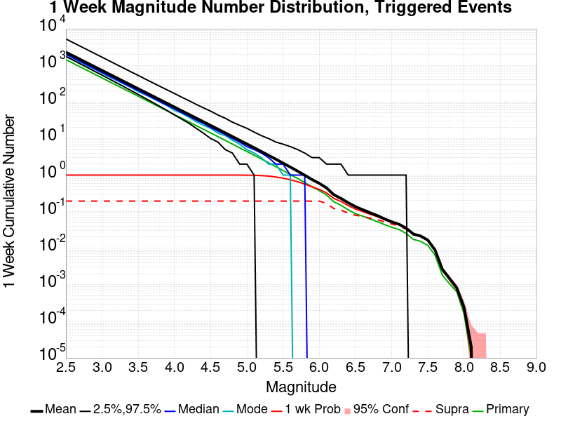
| Mag | Mean | 2.5 %ile | 97.5 %ile | Median | Mode | 1 wk Probability | 1 wk Supra-Seis Prob | Primary Aftershocks Mean |
|---|---|---|---|---|---|---|---|---|
| M≥2.5 | 2291.442 | 1754.000 | 5277.000 | 2020.000 | 1958.000 | 1.000 (100.00%) | 0.193 (19.35%) | 1431.177 |
| M≥2.6 | 1820.213 | 1387.000 | 4187.000 | 1606.000 | 1528.000 | 1.000 (100.00%) | 0.193 (19.35%) | 1136.893 |
| M≥2.7 | 1445.825 | 1097.000 | 3330.000 | 1276.000 | 1214.000 | 1.000 (100.00%) | 0.193 (19.35%) | 903.077 |
| M≥2.8 | 1148.520 | 867.000 | 2651.000 | 1015.000 | 956.000 | 1.000 (100.00%) | 0.193 (19.35%) | 717.393 |
| M≥2.9 | 912.265 | 684.000 | 2102.000 | 807.000 | 776.000 | 1.000 (100.00%) | 0.193 (19.35%) | 569.817 |
| M≥3 | 724.610 | 539.000 | 1673.000 | 641.000 | 609.000 | 1.000 (100.00%) | 0.193 (19.35%) | 452.594 |
| M≥3.1 | 575.549 | 425.000 | 1326.000 | 510.000 | 483.000 | 1.000 (100.00%) | 0.193 (19.35%) | 359.487 |
| M≥3.2 | 457.126 | 334.000 | 1053.000 | 405.000 | 391.000 | 1.000 (100.00%) | 0.193 (19.35%) | 285.517 |
| M≥3.3 | 363.120 | 262.000 | 837.000 | 322.000 | 308.000 | 1.000 (100.00%) | 0.193 (19.35%) | 226.806 |
| M≥3.4 | 288.373 | 205.000 | 665.000 | 256.000 | 248.000 | 1.000 (100.00%) | 0.193 (19.35%) | 180.127 |
| M≥3.5 | 229.032 | 160.000 | 531.000 | 204.000 | 190.000 | 1.000 (100.00%) | 0.193 (19.35%) | 143.049 |
| M≥3.6 | 181.854 | 125.000 | 420.000 | 162.000 | 157.000 | 1.000 (100.00%) | 0.193 (19.35%) | 113.592 |
| M≥3.7 | 144.399 | 97.000 | 334.000 | 129.000 | 125.000 | 1.000 (100.00%) | 0.193 (19.35%) | 90.191 |
| M≥3.8 | 114.669 | 75.000 | 266.000 | 102.000 | 99.000 | 1.000 (100.00%) | 0.193 (19.35%) | 71.618 |
| M≥3.9 | 91.063 | 58.000 | 213.000 | 81.000 | 79.000 | 1.000 (100.00%) | 0.193 (19.35%) | 56.872 |
| M≥4 | 72.290 | 44.000 | 170.000 | 65.000 | 59.000 | 1.000 (100.00%) | 0.193 (19.35%) | 45.155 |
| M≥4.1 | 57.367 | 34.000 | 135.000 | 51.000 | 49.000 | 1.000 (100.00%) | 0.193 (19.35%) | 35.839 |
| M≥4.2 | 45.531 | 26.000 | 108.000 | 41.000 | 38.000 | 1.000 (100.00%) | 0.193 (19.35%) | 28.443 |
| M≥4.3 | 36.128 | 19.000 | 86.000 | 32.000 | 29.000 | 1.000 (100.00%) | 0.193 (19.35%) | 22.570 |
| M≥4.4 | 28.651 | 14.000 | 69.000 | 26.000 | 23.000 | 1.000 (100.00%) | 0.193 (19.35%) | 17.899 |
| M≥4.5 | 22.737 | 10.000 | 56.000 | 20.000 | 19.000 | 1.000 (100.00%) | 0.193 (19.35%) | 14.205 |
| M≥4.6 | 18.037 | 8.000 | 44.000 | 16.000 | 14.000 | 1.000 (100.00%) | 0.193 (19.35%) | 11.266 |
| M≥4.7 | 14.295 | 5.000 | 36.000 | 13.000 | 12.000 | 1.000 (100.00%) | 0.193 (19.35%) | 8.926 |
| M≥4.8 | 11.316 | 4.000 | 28.000 | 10.000 | 9.000 | 1.000 (99.97%) | 0.193 (19.35%) | 7.068 |
| M≥4.9 | 8.953 | 2.000 | 23.000 | 8.000 | 7.000 | 0.999 (99.89%) | 0.193 (19.35%) | 5.590 |
| M≥5 | 7.079 | 2.000 | 19.000 | 6.000 | 5.000 | 0.996 (99.59%) | 0.193 (19.35%) | 4.424 |
| M≥5.1 | 5.590 | 1.000 | 15.000 | 5.000 | 4.000 | 0.987 (98.72%) | 0.193 (19.35%) | 3.496 |
| M≥5.2 | 4.402 | 0.000 | 12.000 | 4.000 | 3.000 | 0.968 (96.84%) | 0.193 (19.35%) | 2.753 |
| M≥5.3 | 3.462 | 0.000 | 10.000 | 3.000 | 2.000 | 0.937 (93.68%) | 0.193 (19.35%) | 2.167 |
| M≥5.4 | 2.716 | 0.000 | 8.000 | 2.000 | 2.000 | 0.888 (88.77%) | 0.193 (19.35%) | 1.703 |
| M≥5.5 | 2.124 | 0.000 | 7.000 | 2.000 | 1.000 | 0.822 (82.24%) | 0.193 (19.35%) | 1.333 |
| M≥5.6 | 1.657 | 0.000 | 6.000 | 1.000 | 1.000 | 0.744 (74.44%) | 0.193 (19.34%) | 1.041 |
| M≥5.7 | 1.284 | 0.000 | 5.000 | 1.000 | 0.000 | 0.658 (65.79%) | 0.193 (19.34%) | 0.809 |
| M≥5.8 | 0.988 | 0.000 | 4.000 | 1.000 | 0.000 | 0.567 (56.67%) | 0.193 (19.34%) | 0.625 |
| M≥5.9 | 0.755 | 0.000 | 3.000 | 0.000 | 0.000 | 0.479 (47.87%) | 0.193 (19.34%) | 0.479 |
| M≥6 | 0.594 | 0.000 | 3.000 | 0.000 | 0.000 | 0.405 (40.55%) | 0.193 (19.34%) | 0.376 |
| M≥6.1 | 0.446 | 0.000 | 2.000 | 0.000 | 0.000 | 0.327 (32.70%) | 0.169 (16.85%) | 0.287 |
| M≥6.2 | 0.292 | 0.000 | 2.000 | 0.000 | 0.000 | 0.231 (23.08%) | 0.122 (12.18%) | 0.186 |
| M≥6.3 | 0.229 | 0.000 | 2.000 | 0.000 | 0.000 | 0.189 (18.92%) | 0.109 (10.91%) | 0.149 |
| M≥6.4 | 0.175 | 0.000 | 1.000 | 0.000 | 0.000 | 0.147 (14.70%) | 0.091 (9.12%) | 0.112 |
| M≥6.5 | 0.137 | 0.000 | 1.000 | 0.000 | 0.000 | 0.117 (11.73%) | 0.079 (7.95%) | 0.088 |
| M≥6.6 | 0.113 | 0.000 | 1.000 | 0.000 | 0.000 | 0.101 (10.10%) | 0.074 (7.41%) | 0.075 |
| M≥6.7 | 0.094 | 0.000 | 1.000 | 0.000 | 0.000 | 0.085 (8.53%) | 0.067 (6.65%) | 0.063 |
| M≥6.8 | 0.078 | 0.000 | 1.000 | 0.000 | 0.000 | 0.073 (7.30%) | 0.060 (6.03%) | 0.054 |
| M≥6.9 | 0.063 | 0.000 | 1.000 | 0.000 | 0.000 | 0.061 (6.05%) | 0.052 (5.25%) | 0.044 |
| M≥7 | 0.053 | 0.000 | 1.000 | 0.000 | 0.000 | 0.051 (5.08%) | 0.046 (4.59%) | 0.037 |
| M≥7.1 | 0.045 | 0.000 | 1.000 | 0.000 | 0.000 | 0.044 (4.42%) | 0.041 (4.12%) | 0.032 |
| M≥7.2 | 0.035 | 0.000 | 1.000 | 0.000 | 0.000 | 0.035 (3.47%) | 0.033 (3.30%) | 0.025 |
| M≥7.3 | 0.024 | 0.000 | 0.000 | 0.000 | 0.000 | 0.024 (2.40%) | 0.023 (2.33%) | 0.017 |
| M≥7.4 | 0.022 | 0.000 | 0.000 | 0.000 | 0.000 | 0.021 (2.13%) | 0.021 (2.10%) | 0.015 |
| M≥7.5 | 0.017 | 0.000 | 0.000 | 0.000 | 0.000 | 0.017 (1.65%) | 0.016 (1.64%) | 0.012 |
| M≥7.6 | 8.91E-3 | 0.000 | 0.000 | 0.000 | 0.000 | 8.87E-3 (0.89%) | 8.80E-3 (0.88%) | 6.45E-3 |
| M≥7.7 | 2.66E-3 | 0.000 | 0.000 | 0.000 | 0.000 | 2.65E-3 (0.27%) | 2.61E-3 (0.26%) | 1.84E-3 |
| M≥7.8 | 1.48E-3 | 0.000 | 0.000 | 0.000 | 0.000 | 1.48E-3 (0.15%) | 1.47E-3 (0.15%) | 1.06E-3 |
| M≥7.9 | 8.20E-4 | 0.000 | 0.000 | 0.000 | 0.000 | 8.20E-4 (0.08%) | 8.20E-4 (0.08%) | 6.40E-4 |
| M≥8 | 2.40E-4 | 0.000 | 0.000 | 0.000 | 0.000 | 2.40E-4 (0.02%) | 2.40E-4 (0.02%) | 1.60E-4 |
| M≥8.1 | 2.00E-5 | 0.000 | 0.000 | 0.000 | 0.000 | 2.00E-5 (0.00%) | 2.00E-5 (0.00%) | 1.00E-5 |
| M≥8.2 | 0.000 | 0.000 | 0.000 | 0.000 | 0.000 | 0.000 (0.00%) | 0.000 (0.00%) | 0.000 |
| M≥8.3 | 0.000 | 0.000 | 0.000 | 0.000 | 0.000 | 0.000 (0.00%) | 0.000 (0.00%) | 0.000 |
| M≥8.4 | 0.000 | 0.000 | 0.000 | 0.000 | 0.000 | 0.000 (0.00%) | 0.000 (0.00%) | 0.000 |
| M≥8.5 | 0.000 | 0.000 | 0.000 | 0.000 | 0.000 | 0.000 (0.00%) | 0.000 (0.00%) | 0.000 |
| M≥8.6 | 0.000 | 0.000 | 0.000 | 0.000 | 0.000 | 0.000 (0.00%) | 0.000 (0.00%) | 0.000 |
| M≥8.7 | 0.000 | 0.000 | 0.000 | 0.000 | 0.000 | 0.000 (0.00%) | 0.000 (0.00%) | 0.000 |
| M≥8.8 | 0.000 | 0.000 | 0.000 | 0.000 | 0.000 | 0.000 (0.00%) | 0.000 (0.00%) | 0.000 |
| M≥8.9 | 0.000 | 0.000 | 0.000 | 0.000 | 0.000 | 0.000 (0.00%) | 0.000 (0.00%) | 0.000 |
| M≥9 | 0.000 | 0.000 | 0.000 | 0.000 | 0.000 | 0.000 (0.00%) | 0.000 (0.00%) | 0.000 |
Legend
| Mag | Mean | 2.5 %ile | 97.5 %ile | Median | Mode | 1 d Probability | 1 d Supra-Seis Prob | Primary Aftershocks Mean |
|---|---|---|---|---|---|---|---|---|
| M≥2.5 | 1486.655 | 1203.000 | 2929.000 | 1354.000 | 1309.000 | 1.000 (100.00%) | 0.136 (13.64%) | 1064.606 |
| M≥2.6 | 1180.919 | 950.000 | 2326.000 | 1076.000 | 1037.000 | 1.000 (100.00%) | 0.136 (13.64%) | 845.679 |
| M≥2.7 | 938.062 | 750.000 | 1844.000 | 856.000 | 829.000 | 1.000 (100.00%) | 0.136 (13.64%) | 671.756 |
| M≥2.8 | 745.133 | 591.000 | 1467.000 | 681.000 | 667.000 | 1.000 (100.00%) | 0.136 (13.64%) | 533.611 |
| M≥2.9 | 591.843 | 465.000 | 1166.000 | 541.000 | 517.000 | 1.000 (100.00%) | 0.136 (13.64%) | 423.822 |
| M≥3 | 470.119 | 366.000 | 926.000 | 430.000 | 418.000 | 1.000 (100.00%) | 0.136 (13.64%) | 336.651 |
| M≥3.1 | 373.393 | 287.000 | 735.000 | 342.000 | 336.000 | 1.000 (100.00%) | 0.136 (13.64%) | 267.382 |
| M≥3.2 | 296.557 | 225.000 | 584.000 | 272.000 | 262.000 | 1.000 (100.00%) | 0.136 (13.64%) | 212.347 |
| M≥3.3 | 235.581 | 176.000 | 464.000 | 216.000 | 210.000 | 1.000 (100.00%) | 0.136 (13.64%) | 168.689 |
| M≥3.4 | 187.094 | 137.000 | 369.000 | 172.000 | 164.000 | 1.000 (100.00%) | 0.136 (13.64%) | 133.977 |
| M≥3.5 | 148.612 | 107.000 | 294.000 | 137.000 | 134.000 | 1.000 (100.00%) | 0.136 (13.64%) | 106.404 |
| M≥3.6 | 118.007 | 83.000 | 234.000 | 109.000 | 106.000 | 1.000 (100.00%) | 0.136 (13.64%) | 84.495 |
| M≥3.7 | 93.700 | 64.000 | 186.000 | 86.000 | 84.000 | 1.000 (100.00%) | 0.136 (13.64%) | 67.086 |
| M≥3.8 | 74.413 | 49.000 | 148.000 | 69.000 | 67.000 | 1.000 (100.00%) | 0.136 (13.64%) | 53.272 |
| M≥3.9 | 59.093 | 37.000 | 118.000 | 55.000 | 54.000 | 1.000 (100.00%) | 0.136 (13.64%) | 42.300 |
| M≥4 | 46.913 | 28.000 | 94.000 | 43.000 | 41.000 | 1.000 (100.00%) | 0.136 (13.64%) | 33.587 |
| M≥4.1 | 37.226 | 21.000 | 75.000 | 34.000 | 33.000 | 1.000 (100.00%) | 0.136 (13.64%) | 26.658 |
| M≥4.2 | 29.541 | 16.000 | 60.000 | 27.000 | 26.000 | 1.000 (100.00%) | 0.136 (13.64%) | 21.150 |
| M≥4.3 | 23.446 | 12.000 | 48.000 | 22.000 | 20.000 | 1.000 (100.00%) | 0.136 (13.64%) | 16.782 |
| M≥4.4 | 18.593 | 9.000 | 39.000 | 17.000 | 16.000 | 1.000 (100.00%) | 0.136 (13.64%) | 13.309 |
| M≥4.5 | 14.758 | 6.000 | 32.000 | 14.000 | 13.000 | 1.000 (100.00%) | 0.136 (13.64%) | 10.564 |
| M≥4.6 | 11.705 | 4.000 | 25.000 | 11.000 | 10.000 | 1.000 (99.99%) | 0.136 (13.64%) | 8.378 |
| M≥4.7 | 9.276 | 3.000 | 21.000 | 8.000 | 8.000 | 1.000 (99.97%) | 0.136 (13.64%) | 6.639 |
| M≥4.8 | 7.346 | 2.000 | 17.000 | 7.000 | 6.000 | 0.998 (99.78%) | 0.136 (13.64%) | 5.258 |
| M≥4.9 | 5.813 | 1.000 | 14.000 | 5.000 | 4.000 | 0.992 (99.20%) | 0.136 (13.64%) | 4.160 |
| M≥5 | 4.596 | 1.000 | 12.000 | 4.000 | 3.000 | 0.979 (97.87%) | 0.136 (13.64%) | 3.293 |
| M≥5.1 | 3.631 | 0.000 | 10.000 | 3.000 | 3.000 | 0.952 (95.25%) | 0.136 (13.64%) | 2.603 |
| M≥5.2 | 2.859 | 0.000 | 8.000 | 2.000 | 2.000 | 0.911 (91.09%) | 0.136 (13.64%) | 2.051 |
| M≥5.3 | 2.248 | 0.000 | 7.000 | 2.000 | 1.000 | 0.854 (85.42%) | 0.136 (13.64%) | 1.612 |
| M≥5.4 | 1.765 | 0.000 | 6.000 | 1.000 | 1.000 | 0.781 (78.14%) | 0.136 (13.64%) | 1.267 |
| M≥5.5 | 1.381 | 0.000 | 5.000 | 1.000 | 1.000 | 0.698 (69.84%) | 0.136 (13.64%) | 0.992 |
| M≥5.6 | 1.076 | 0.000 | 4.000 | 1.000 | 0.000 | 0.611 (61.07%) | 0.136 (13.64%) | 0.775 |
| M≥5.7 | 0.836 | 0.000 | 3.000 | 1.000 | 0.000 | 0.523 (52.26%) | 0.136 (13.64%) | 0.603 |
| M≥5.8 | 0.644 | 0.000 | 3.000 | 0.000 | 0.000 | 0.438 (43.82%) | 0.136 (13.64%) | 0.466 |
| M≥5.9 | 0.493 | 0.000 | 3.000 | 0.000 | 0.000 | 0.360 (36.02%) | 0.136 (13.64%) | 0.357 |
| M≥6 | 0.388 | 0.000 | 2.000 | 0.000 | 0.000 | 0.299 (29.88%) | 0.136 (13.64%) | 0.281 |
| M≥6.1 | 0.293 | 0.000 | 2.000 | 0.000 | 0.000 | 0.236 (23.63%) | 0.119 (11.93%) | 0.214 |
| M≥6.2 | 0.191 | 0.000 | 1.000 | 0.000 | 0.000 | 0.162 (16.24%) | 0.085 (8.49%) | 0.139 |
| M≥6.3 | 0.151 | 0.000 | 1.000 | 0.000 | 0.000 | 0.133 (13.27%) | 0.076 (7.65%) | 0.112 |
| M≥6.4 | 0.115 | 0.000 | 1.000 | 0.000 | 0.000 | 0.102 (10.15%) | 0.063 (6.34%) | 0.084 |
| M≥6.5 | 0.090 | 0.000 | 1.000 | 0.000 | 0.000 | 0.081 (8.09%) | 0.055 (5.54%) | 0.066 |
| M≥6.6 | 0.075 | 0.000 | 1.000 | 0.000 | 0.000 | 0.070 (6.97%) | 0.052 (5.18%) | 0.056 |
| M≥6.7 | 0.063 | 0.000 | 1.000 | 0.000 | 0.000 | 0.059 (5.91%) | 0.047 (4.66%) | 0.048 |
| M≥6.8 | 0.053 | 0.000 | 1.000 | 0.000 | 0.000 | 0.051 (5.07%) | 0.042 (4.22%) | 0.041 |
| M≥6.9 | 0.044 | 0.000 | 1.000 | 0.000 | 0.000 | 0.043 (4.26%) | 0.037 (3.71%) | 0.034 |
| M≥7 | 0.037 | 0.000 | 1.000 | 0.000 | 0.000 | 0.036 (3.57%) | 0.032 (3.22%) | 0.029 |
| M≥7.1 | 0.031 | 0.000 | 1.000 | 0.000 | 0.000 | 0.031 (3.08%) | 0.029 (2.87%) | 0.025 |
| M≥7.2 | 0.025 | 0.000 | 0.000 | 0.000 | 0.000 | 0.024 (2.44%) | 0.023 (2.32%) | 0.020 |
| M≥7.3 | 0.017 | 0.000 | 0.000 | 0.000 | 0.000 | 0.017 (1.67%) | 0.016 (1.62%) | 0.013 |
| M≥7.4 | 0.015 | 0.000 | 0.000 | 0.000 | 0.000 | 0.015 (1.48%) | 0.015 (1.46%) | 0.012 |
| M≥7.5 | 0.012 | 0.000 | 0.000 | 0.000 | 0.000 | 0.011 (1.15%) | 0.011 (1.14%) | 9.11E-3 |
| M≥7.6 | 6.31E-3 | 0.000 | 0.000 | 0.000 | 0.000 | 6.29E-3 (0.63%) | 6.24E-3 (0.62%) | 4.97E-3 |
| M≥7.7 | 1.91E-3 | 0.000 | 0.000 | 0.000 | 0.000 | 1.90E-3 (0.19%) | 1.86E-3 (0.19%) | 1.44E-3 |
| M≥7.8 | 1.11E-3 | 0.000 | 0.000 | 0.000 | 0.000 | 1.11E-3 (0.11%) | 1.10E-3 (0.11%) | 8.70E-4 |
| M≥7.9 | 6.30E-4 | 0.000 | 0.000 | 0.000 | 0.000 | 6.30E-4 (0.06%) | 6.30E-4 (0.06%) | 5.20E-4 |
| M≥8 | 1.50E-4 | 0.000 | 0.000 | 0.000 | 0.000 | 1.50E-4 (0.01%) | 1.50E-4 (0.01%) | 1.00E-4 |
| M≥8.1 | 1.00E-5 | 0.000 | 0.000 | 0.000 | 0.000 | 1.00E-5 (0.00%) | 1.00E-5 (0.00%) | 1.00E-5 |
| M≥8.2 | 0.000 | 0.000 | 0.000 | 0.000 | 0.000 | 0.000 (0.00%) | 0.000 (0.00%) | 0.000 |
| M≥8.3 | 0.000 | 0.000 | 0.000 | 0.000 | 0.000 | 0.000 (0.00%) | 0.000 (0.00%) | 0.000 |
| M≥8.4 | 0.000 | 0.000 | 0.000 | 0.000 | 0.000 | 0.000 (0.00%) | 0.000 (0.00%) | 0.000 |
| M≥8.5 | 0.000 | 0.000 | 0.000 | 0.000 | 0.000 | 0.000 (0.00%) | 0.000 (0.00%) | 0.000 |
| M≥8.6 | 0.000 | 0.000 | 0.000 | 0.000 | 0.000 | 0.000 (0.00%) | 0.000 (0.00%) | 0.000 |
| M≥8.7 | 0.000 | 0.000 | 0.000 | 0.000 | 0.000 | 0.000 (0.00%) | 0.000 (0.00%) | 0.000 |
| M≥8.8 | 0.000 | 0.000 | 0.000 | 0.000 | 0.000 | 0.000 (0.00%) | 0.000 (0.00%) | 0.000 |
| M≥8.9 | 0.000 | 0.000 | 0.000 | 0.000 | 0.000 | 0.000 (0.00%) | 0.000 (0.00%) | 0.000 |
| M≥9 | 0.000 | 0.000 | 0.000 | 0.000 | 0.000 | 0.000 (0.00%) | 0.000 (0.00%) | 0.000 |
Legend
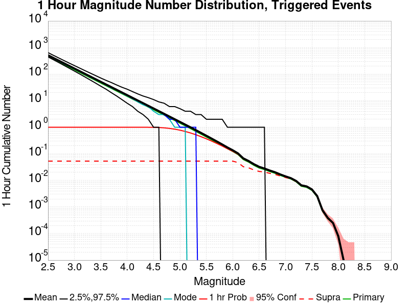
| Mag | Mean | 2.5 %ile | 97.5 %ile | Median | Mode | 1 hr Probability | 1 hr Supra-Seis Prob | Primary Aftershocks Mean |
|---|---|---|---|---|---|---|---|---|
| M≥2.5 | 512.320 | 444.000 | 643.000 | 496.000 | 493.000 | 1.000 (100.00%) | 0.053 (5.32%) | 457.563 |
| M≥2.6 | 406.942 | 349.000 | 511.000 | 394.000 | 391.000 | 1.000 (100.00%) | 0.053 (5.32%) | 363.455 |
| M≥2.7 | 323.233 | 274.000 | 408.000 | 313.000 | 308.000 | 1.000 (100.00%) | 0.053 (5.32%) | 288.685 |
| M≥2.8 | 256.737 | 214.000 | 325.000 | 249.000 | 244.000 | 1.000 (100.00%) | 0.053 (5.32%) | 229.307 |
| M≥2.9 | 203.888 | 167.000 | 260.000 | 198.000 | 196.000 | 1.000 (100.00%) | 0.053 (5.32%) | 182.099 |
| M≥3 | 161.944 | 130.000 | 209.000 | 157.000 | 156.000 | 1.000 (100.00%) | 0.053 (5.32%) | 144.646 |
| M≥3.1 | 128.646 | 101.000 | 168.000 | 125.000 | 124.000 | 1.000 (100.00%) | 0.053 (5.32%) | 114.898 |
| M≥3.2 | 102.170 | 78.000 | 135.000 | 99.000 | 98.000 | 1.000 (100.00%) | 0.053 (5.32%) | 91.248 |
| M≥3.3 | 81.151 | 60.000 | 109.000 | 79.000 | 78.000 | 1.000 (100.00%) | 0.053 (5.32%) | 72.479 |
| M≥3.4 | 64.457 | 46.000 | 88.000 | 63.000 | 61.000 | 1.000 (100.00%) | 0.053 (5.32%) | 57.570 |
| M≥3.5 | 51.194 | 35.000 | 71.000 | 50.000 | 50.000 | 1.000 (100.00%) | 0.053 (5.32%) | 45.722 |
| M≥3.6 | 40.661 | 27.000 | 58.000 | 39.000 | 39.000 | 1.000 (100.00%) | 0.053 (5.32%) | 36.316 |
| M≥3.7 | 32.288 | 20.000 | 48.000 | 31.000 | 30.000 | 1.000 (100.00%) | 0.053 (5.32%) | 28.835 |
| M≥3.8 | 25.644 | 15.000 | 39.000 | 25.000 | 25.000 | 1.000 (100.00%) | 0.053 (5.32%) | 22.900 |
| M≥3.9 | 20.359 | 11.000 | 32.000 | 20.000 | 19.000 | 1.000 (100.00%) | 0.053 (5.32%) | 18.179 |
| M≥4 | 16.161 | 8.000 | 27.000 | 16.000 | 15.000 | 1.000 (100.00%) | 0.053 (5.32%) | 14.431 |
| M≥4.1 | 12.824 | 6.000 | 22.000 | 12.000 | 12.000 | 1.000 (100.00%) | 0.053 (5.32%) | 11.449 |
| M≥4.2 | 10.172 | 4.000 | 18.000 | 10.000 | 9.000 | 1.000 (99.99%) | 0.053 (5.32%) | 9.083 |
| M≥4.3 | 8.074 | 3.000 | 15.000 | 8.000 | 7.000 | 0.999 (99.94%) | 0.053 (5.32%) | 7.208 |
| M≥4.4 | 6.408 | 2.000 | 13.000 | 6.000 | 6.000 | 0.998 (99.75%) | 0.053 (5.32%) | 5.719 |
| M≥4.5 | 5.088 | 1.000 | 11.000 | 5.000 | 4.000 | 0.991 (99.13%) | 0.053 (5.32%) | 4.541 |
| M≥4.6 | 4.031 | 1.000 | 9.000 | 4.000 | 3.000 | 0.977 (97.69%) | 0.053 (5.32%) | 3.597 |
| M≥4.7 | 3.196 | 0.000 | 8.000 | 3.000 | 3.000 | 0.949 (94.91%) | 0.053 (5.32%) | 2.850 |
| M≥4.8 | 2.532 | 0.000 | 6.000 | 2.000 | 2.000 | 0.907 (90.66%) | 0.053 (5.32%) | 2.258 |
| M≥4.9 | 2.004 | 0.000 | 6.000 | 2.000 | 1.000 | 0.847 (84.73%) | 0.053 (5.32%) | 1.787 |
| M≥5 | 1.587 | 0.000 | 5.000 | 1.000 | 1.000 | 0.776 (77.60%) | 0.053 (5.32%) | 1.415 |
| M≥5.1 | 1.255 | 0.000 | 4.000 | 1.000 | 1.000 | 0.694 (69.44%) | 0.053 (5.32%) | 1.120 |
| M≥5.2 | 0.991 | 0.000 | 4.000 | 1.000 | 0.000 | 0.609 (60.93%) | 0.053 (5.32%) | 0.885 |
| M≥5.3 | 0.780 | 0.000 | 3.000 | 1.000 | 0.000 | 0.525 (52.47%) | 0.053 (5.32%) | 0.696 |
| M≥5.4 | 0.611 | 0.000 | 3.000 | 0.000 | 0.000 | 0.442 (44.19%) | 0.053 (5.32%) | 0.545 |
| M≥5.5 | 0.479 | 0.000 | 2.000 | 0.000 | 0.000 | 0.368 (36.80%) | 0.053 (5.32%) | 0.428 |
| M≥5.6 | 0.374 | 0.000 | 2.000 | 0.000 | 0.000 | 0.302 (30.20%) | 0.053 (5.32%) | 0.334 |
| M≥5.7 | 0.291 | 0.000 | 2.000 | 0.000 | 0.000 | 0.244 (24.45%) | 0.053 (5.32%) | 0.260 |
| M≥5.8 | 0.225 | 0.000 | 2.000 | 0.000 | 0.000 | 0.196 (19.62%) | 0.053 (5.32%) | 0.202 |
| M≥5.9 | 0.173 | 0.000 | 1.000 | 0.000 | 0.000 | 0.155 (15.50%) | 0.053 (5.32%) | 0.155 |
| M≥6 | 0.136 | 0.000 | 1.000 | 0.000 | 0.000 | 0.124 (12.41%) | 0.053 (5.31%) | 0.122 |
| M≥6.1 | 0.104 | 0.000 | 1.000 | 0.000 | 0.000 | 0.096 (9.64%) | 0.047 (4.68%) | 0.093 |
| M≥6.2 | 0.067 | 0.000 | 1.000 | 0.000 | 0.000 | 0.064 (6.40%) | 0.033 (3.28%) | 0.061 |
| M≥6.3 | 0.054 | 0.000 | 1.000 | 0.000 | 0.000 | 0.052 (5.17%) | 0.030 (2.97%) | 0.049 |
| M≥6.4 | 0.041 | 0.000 | 1.000 | 0.000 | 0.000 | 0.039 (3.93%) | 0.025 (2.48%) | 0.037 |
| M≥6.5 | 0.032 | 0.000 | 1.000 | 0.000 | 0.000 | 0.031 (3.14%) | 0.022 (2.17%) | 0.029 |
| M≥6.6 | 0.028 | 0.000 | 1.000 | 0.000 | 0.000 | 0.027 (2.75%) | 0.021 (2.07%) | 0.025 |
| M≥6.7 | 0.024 | 0.000 | 0.000 | 0.000 | 0.000 | 0.023 (2.32%) | 0.018 (1.85%) | 0.021 |
| M≥6.8 | 0.020 | 0.000 | 0.000 | 0.000 | 0.000 | 0.020 (2.00%) | 0.017 (1.68%) | 0.019 |
| M≥6.9 | 0.017 | 0.000 | 0.000 | 0.000 | 0.000 | 0.017 (1.67%) | 0.015 (1.46%) | 0.015 |
| M≥7 | 0.014 | 0.000 | 0.000 | 0.000 | 0.000 | 0.014 (1.41%) | 0.013 (1.29%) | 0.013 |
| M≥7.1 | 0.012 | 0.000 | 0.000 | 0.000 | 0.000 | 0.012 (1.21%) | 0.011 (1.14%) | 0.011 |
| M≥7.2 | 9.57E-3 | 0.000 | 0.000 | 0.000 | 0.000 | 9.53E-3 (0.95%) | 9.11E-3 (0.91%) | 8.84E-3 |
| M≥7.3 | 6.53E-3 | 0.000 | 0.000 | 0.000 | 0.000 | 6.50E-3 (0.65%) | 6.33E-3 (0.63%) | 5.98E-3 |
| M≥7.4 | 5.95E-3 | 0.000 | 0.000 | 0.000 | 0.000 | 5.92E-3 (0.59%) | 5.81E-3 (0.58%) | 5.46E-3 |
| M≥7.5 | 4.58E-3 | 0.000 | 0.000 | 0.000 | 0.000 | 4.57E-3 (0.46%) | 4.53E-3 (0.45%) | 4.20E-3 |
| M≥7.6 | 2.59E-3 | 0.000 | 0.000 | 0.000 | 0.000 | 2.58E-3 (0.26%) | 2.55E-3 (0.26%) | 2.36E-3 |
| M≥7.7 | 7.60E-4 | 0.000 | 0.000 | 0.000 | 0.000 | 7.50E-4 (0.07%) | 7.30E-4 (0.07%) | 6.90E-4 |
| M≥7.8 | 3.90E-4 | 0.000 | 0.000 | 0.000 | 0.000 | 3.90E-4 (0.04%) | 3.90E-4 (0.04%) | 3.60E-4 |
| M≥7.9 | 2.50E-4 | 0.000 | 0.000 | 0.000 | 0.000 | 2.50E-4 (0.03%) | 2.50E-4 (0.03%) | 2.40E-4 |
| M≥8 | 8.00E-5 | 0.000 | 0.000 | 0.000 | 0.000 | 8.00E-5 (0.01%) | 8.00E-5 (0.01%) | 7.00E-5 |
| M≥8.1 | 1.00E-5 | 0.000 | 0.000 | 0.000 | 0.000 | 1.00E-5 (0.00%) | 1.00E-5 (0.00%) | 1.00E-5 |
| M≥8.2 | 0.000 | 0.000 | 0.000 | 0.000 | 0.000 | 0.000 (0.00%) | 0.000 (0.00%) | 0.000 |
| M≥8.3 | 0.000 | 0.000 | 0.000 | 0.000 | 0.000 | 0.000 (0.00%) | 0.000 (0.00%) | 0.000 |
| M≥8.4 | 0.000 | 0.000 | 0.000 | 0.000 | 0.000 | 0.000 (0.00%) | 0.000 (0.00%) | 0.000 |
| M≥8.5 | 0.000 | 0.000 | 0.000 | 0.000 | 0.000 | 0.000 (0.00%) | 0.000 (0.00%) | 0.000 |
| M≥8.6 | 0.000 | 0.000 | 0.000 | 0.000 | 0.000 | 0.000 (0.00%) | 0.000 (0.00%) | 0.000 |
| M≥8.7 | 0.000 | 0.000 | 0.000 | 0.000 | 0.000 | 0.000 (0.00%) | 0.000 (0.00%) | 0.000 |
| M≥8.8 | 0.000 | 0.000 | 0.000 | 0.000 | 0.000 | 0.000 (0.00%) | 0.000 (0.00%) | 0.000 |
| M≥8.9 | 0.000 | 0.000 | 0.000 | 0.000 | 0.000 | 0.000 (0.00%) | 0.000 (0.00%) | 0.000 |
| M≥9 | 0.000 | 0.000 | 0.000 | 0.000 | 0.000 | 0.000 (0.00%) | 0.000 (0.00%) | 0.000 |
These plots show how the probability of ruptures of various magnitudes within 100km of any scenario rupture changes over time

| Forecast Duration | UCERF3-ETAS [95% Conf] | UCERF3-ETAS Triggered Only | UCERF3-TD | UCERF3-ETAS/TD Gain | UCERF3-TI |
|---|---|---|---|---|---|
| 1 Hour | 0.774 [0.771 - 0.777] | 0.774 | 7.14E-5 | 10842.73 | 7.09E-5 |
| 1 Day | 0.978 [0.977 - 0.979] | 0.978 | 1.71E-3 | 571.4 | 1.70E-3 |
| 1 Week | 0.996 [0.995 - 0.996] | 0.996 | 0.012 | 83.53 | 0.012 |
| 1 Month | 0.999 [0.999 - 0.999] | 0.999 | 0.050 | 19.94 | 0.050 |
| 1 Year | 1.000 [1.000 - 1.000] | 1.000 | 0.465 | 2.15 | 0.463 |
| 10 Years | 1.000 [1.000 - 1.000] | 1.000 | 0.998 | 1 | 0.998 |
| 30 Years | 1.000 [1.000 - 1.000] * | * | 1.000 | 1 * | 1.000 |
| 100 Years | 1.000 [1.000 - 1.000] * | * | 1.000 | 1 * | 1.000 |
* forecast duration is longer than simulation length, only ETAS ruptures from the first 10 years are included

| Forecast Duration | UCERF3-ETAS [95% Conf] | UCERF3-ETAS Triggered Only | UCERF3-TD | UCERF3-ETAS/TD Gain | UCERF3-TI |
|---|---|---|---|---|---|
| 1 Hour | 0.123 [0.121 - 0.125] | 0.123 | 7.85E-6 | 15697.31 | 7.36E-6 |
| 1 Day | 0.297 [0.294 - 0.300] | 0.297 | 1.88E-4 | 1574.17 | 1.77E-4 |
| 1 Week | 0.403 [0.400 - 0.406] | 0.403 | 1.32E-3 | 305.83 | 1.23E-3 |
| 1 Month | 0.480 [0.476 - 0.483] | 0.477 | 5.64E-3 | 85.03 | 5.28E-3 |
| 1 Year | 0.613 [0.610 - 0.615] | 0.585 | 0.067 | 9.21 | 0.062 |
| 10 Years | 0.833 [0.831 - 0.834] | 0.667 | 0.498 | 1.67 | 0.475 |
| 30 Years | 0.958 [0.958 - 0.958] * | * | 0.874 | 1.1 * | 0.855 |
| 100 Years | 1.000 [1.000 - 1.000] * | * | 0.999 | 1 * | 0.998 |
* forecast duration is longer than simulation length, only ETAS ruptures from the first 10 years are included
| Forecast Duration | UCERF3-ETAS [95% Conf] | UCERF3-ETAS Triggered Only | UCERF3-TD | UCERF3-ETAS/TD Gain | UCERF3-TI |
|---|---|---|---|---|---|
| 1 Hour | 0.014 [0.013 - 0.015] | 0.014 | 7.16E-7 | 19613.58 | 6.48E-7 |
| 1 Day | 0.035 [0.034 - 0.037] | 0.035 | 1.72E-5 | 2065.5 | 1.55E-5 |
| 1 Week | 0.051 [0.049 - 0.052] | 0.050 | 1.20E-4 | 420.3 | 1.09E-4 |
| 1 Month | 0.063 [0.061 - 0.064] | 0.062 | 5.15E-4 | 121.63 | 4.66E-4 |
| 1 Year | 0.088 [0.087 - 0.090] | 0.083 | 6.26E-3 | 14.13 | 5.66E-3 |
| 10 Years | 0.157 [0.155 - 0.159] | 0.102 | 0.061 | 2.57 | 0.055 |
| 30 Years | 0.258 [0.257 - 0.260] * | * | 0.174 | 1.49 * | 0.157 |
| 100 Years | 0.537 [0.536 - 0.538] * | * | 0.485 | 1.11 * | 0.433 |
* forecast duration is longer than simulation length, only ETAS ruptures from the first 10 years are included

| Forecast Duration | UCERF3-ETAS [95% Conf] | UCERF3-ETAS Triggered Only | UCERF3-TD | UCERF3-ETAS/TD Gain | UCERF3-TI |
|---|---|---|---|---|---|
| 1 Hour | 8.00E-5 [3.72E-5 - 1.64E-4] | 8.00E-5 | 1.24E-8 | 6470.26 | 1.06E-8 |
| 1 Day | 1.30E-4 [7.26E-5 - 2.29E-4] | 1.30E-4 | 2.97E-7 | 439.02 | 2.54E-7 |
| 1 Week | 2.22E-4 [1.43E-4 - 3.41E-4] | 2.20E-4 | 2.08E-6 | 106.9 | 1.78E-6 |
| 1 Month | 2.99E-4 [2.07E-4 - 4.31E-4] | 2.90E-4 | 8.90E-6 | 33.57 | 7.63E-6 |
| 1 Year | 5.18E-4 [4.06E-4 - 6.70E-4] | 4.10E-4 | 1.08E-4 | 4.78 | 9.29E-5 |
| 10 Years | 1.59E-3 [1.46E-3 - 1.75E-3] | 4.90E-4 | 1.10E-3 | 1.45 | 9.29E-4 |
| 30 Years | 3.99E-3 [3.87E-3 - 4.15E-3] * | * | 3.50E-3 | 1.14 * | 2.78E-3 |
| 100 Years | 0.014 [0.014 - 0.014] * | * | 0.014 | 1.04 * | 9.25E-3 |
* forecast duration is longer than simulation length, only ETAS ruptures from the first 10 years are included
| Section Name | Strike, Dip, Rake | # Hypos In Poly | Max Mag w/ Hypo In Poly | # Surfs In Poly | Max Mag w/ Surf In Poly | Min Dist To Any (km) | Min Poly Dist To Any (km) | Min Dist To Largest (km) | Min Poly Dist To Largest (km) | Min Hypo Dist To Largest (km) | Min Hypo Poly Dist To Largest (km) |
|---|---|---|---|---|---|---|---|---|---|---|---|
| Airport Lake | 359, 50, -90 | 90 | 7.1 | 90 | 7.1 | 0.139 | 0.000 | 0.139 | 0.000 | 5.612 | 0.000 |
| Little Lake | 327, 90, 180 | 16 | 3.75 | 17 | 7.1 | 2.268 | 0.000 | 11.284 | 0.000 | 13.471 | 1.469 |
| Garlock (Central) | 71, 90, 0 | 2 | 3.21 | 3 | 7.1 | 5.600 | 0.000 | 5.600 | 0.000 | 22.766 | 10.797 |
| So Sierra Nevada | 2, 50, -90 | 1 | 2.75 | 1 | 2.75 | 1.410 | 0.000 | 4.248 | 4.233 | 16.191 | 15.188 |
| Tank Canyon | 189, 50, -90 | 0 | 0 | 8.578 | 8.573 | 8.578 | 8.573 | 17.039 | 16.895 | ||
| Blackwater | 323, 90, 180 | 0 | 0 | 14.394 | 8.726 | 14.394 | 8.726 | 29.622 | 27.613 | ||
| Scodie Lineament | 221, 68, 0 | 0 | 0 | 16.722 | 15.781 | 28.750 | 27.691 | 36.559 | 32.668 |
These are map plots of individual catalogs from the simulations, selected as the closest catalog to each of the given percentiles in terms of total number of events.
| Duration | p0.0 %-ile | p25.0 %-ile | p50.0 %-ile | p75.0 %-ile | p90.0 %-ile | p95.0 %-ile | p97.5 %-ile | p98.0 %-ile | p99.0 %-ile | p99.5 %-ile | p99.9 %-ile | p100.0 %-ile |
|---|---|---|---|---|---|---|---|---|---|---|---|---|
| 1 Week |  |  |  |  |  | |||||||
| 1 Month |  |  |  |  |  |  |  |  |  | |||
| 1 Year |  |  |  |  |  |  |  | |||||
| 10 Year |  |  |  |  |  |  |
These plots compare simulated sequences with data from ComCat. All plots only consider events with hypocenters inside the ComCat region defined in the JSON input file, and consider ruptures above Mc=3.5
Last updated at 2019/09/11 15:38:54 UTC, 67.5 d after the simulation start time
| Incremental MND | Cumulative MND |
|---|---|
| 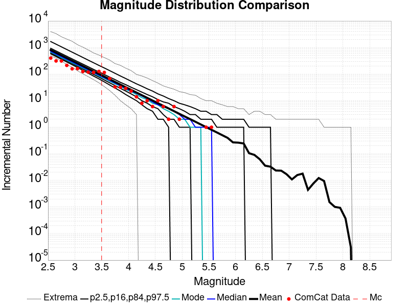 | 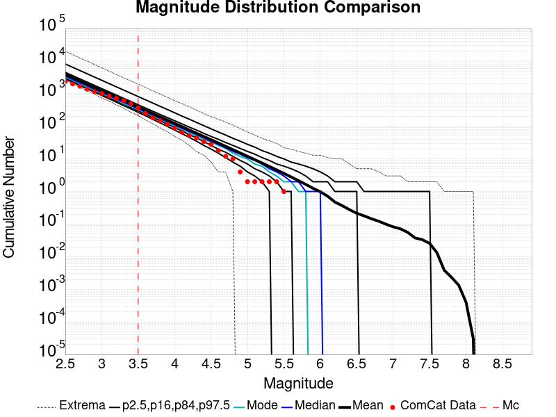 |
| M≥3.5 | M≥4 | M≥5 | M≥6 | M≥7 |
|---|---|---|---|---|
 |  |  |  |  |

| 1 Day | 1 Week | 1 Month | 67.5 Day | |
|---|---|---|---|---|
| M≥3.5 |  |  | ||
| M≥4 |  |  |  |  |
| M≥5 |  |  |  | |
| M≥6 | 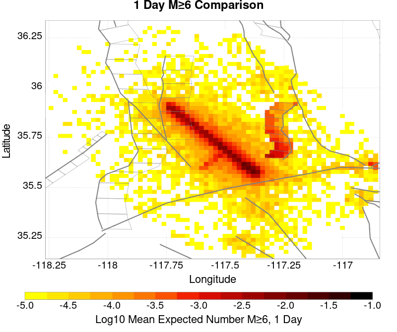 |  | ||
| M≥7 |  |  | 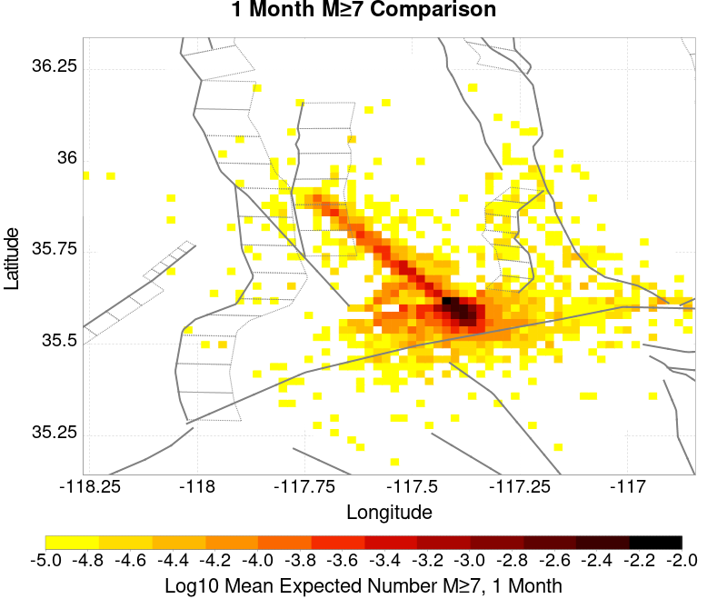 |  |
| M≥8 |  |  |
| M≥3.5 | M≥4 | M≥5 | M≥6 | M≥7 | M≥8 |
|---|---|---|---|---|---|
 | 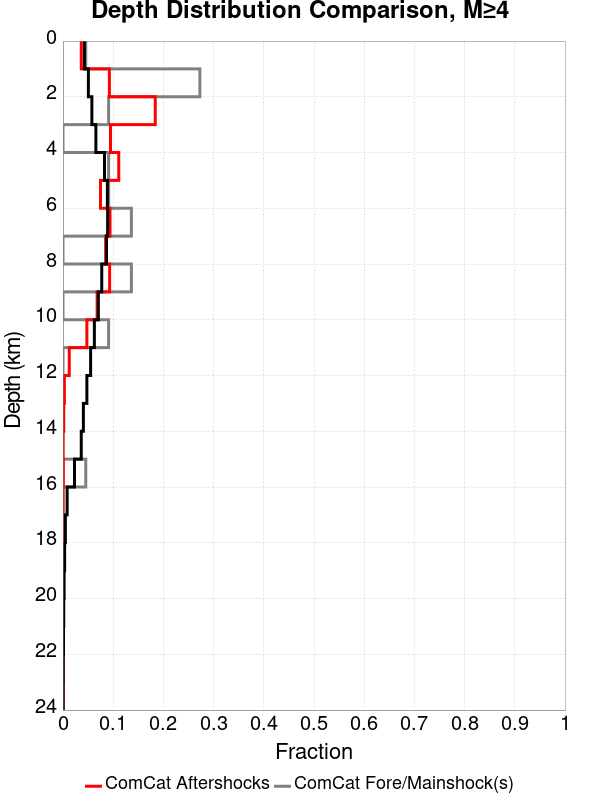 | 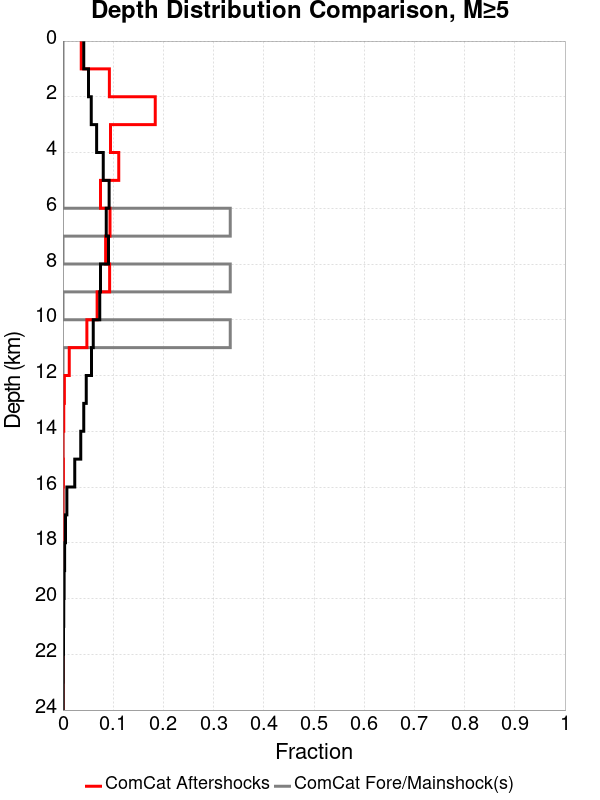 | 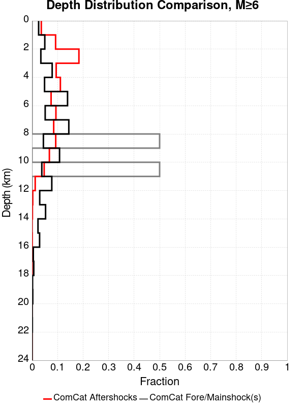 | 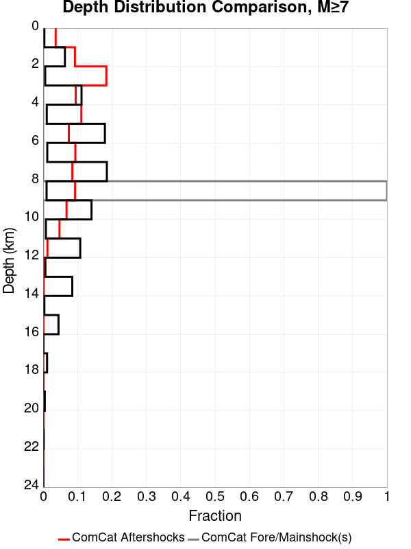 | 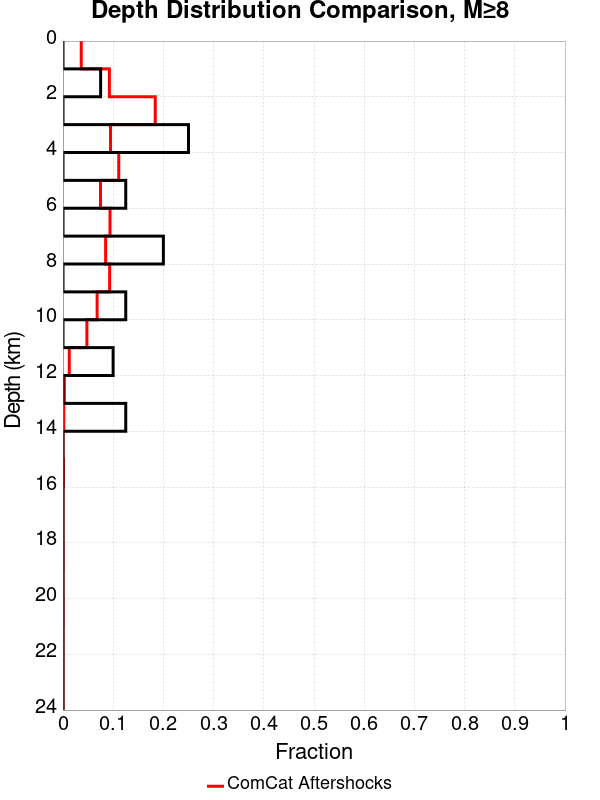 |
| Min Mag | 1 yr Triggered Ruptures (no spontaneous) | 10 yr Triggered Ruptures (no spontaneous) | 10 yr Triggered Ruptures (primary aftershocks only) |
|---|---|---|---|
| All Supra. Seis. | 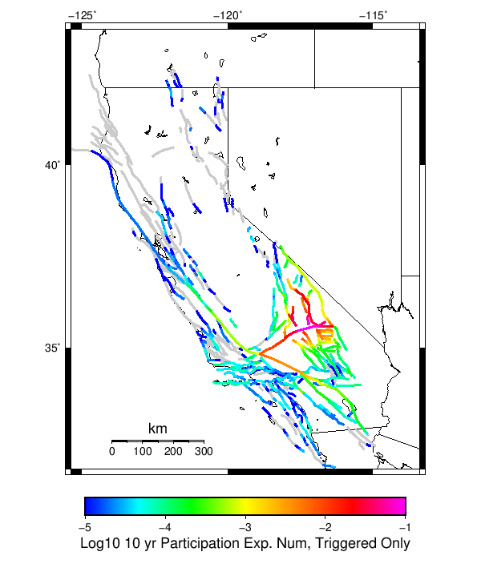 | ||
| M≥6.5 |  |  | |
| M≥7 | 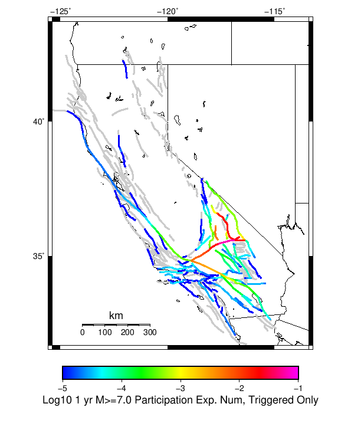 |  |  |
| M≥7.5 | 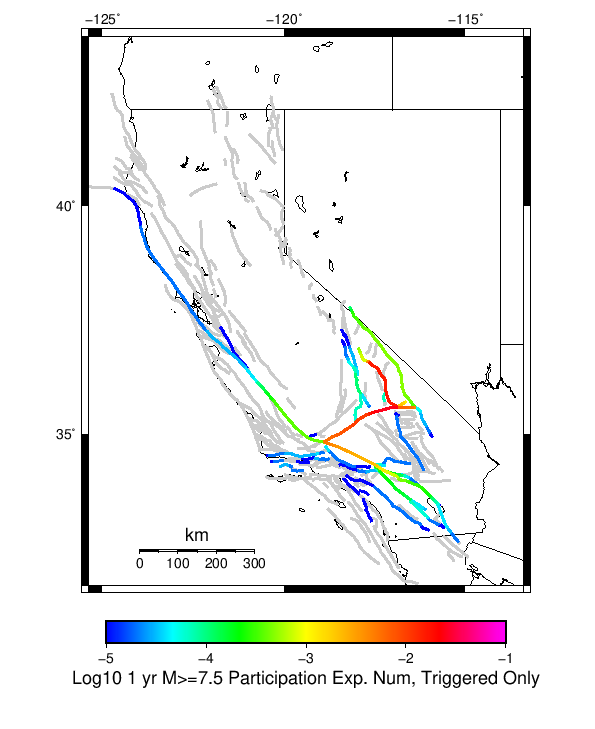 | 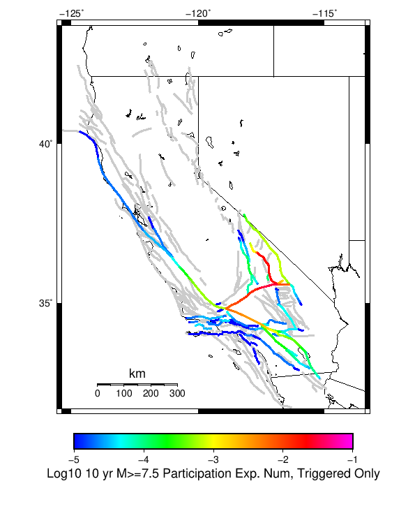 |  |
| M≥8 |  |  |
First 10 of 219 with matching ruptures shown
| Parent Name | Triggered 10 Year Mean Count | Triggered 1 Day Prob | Triggered 1 Week Prob | Triggered 1 Month Prob | Triggered 1 Year Prob | Triggered 10 Year Prob | Triggered 10 Year Primary Mean Count |
|---|---|---|---|---|---|---|---|
| Garlock (Central) | 0.22198 | 0.07888 | 0.11021 | 0.13372 | 0.17437 | 0.21048 | 0.13077 |
| Tank Canyon | 0.15237 | 0.02993 | 0.0479 | 0.06379 | 0.09511 | 0.12847 | 0.03952 |
| Owl Lake | 0.06905 | 0.01642 | 0.02512 | 0.0325 | 0.04596 | 0.06011 | 0.01934 |
| Little Lake | 0.05283 | 0.01657 | 0.02388 | 0.02998 | 0.04103 | 0.05126 | 0.02823 |
| Panamint Valley | 0.04728 | 0.0124 | 0.01918 | 0.0243 | 0.03487 | 0.04598 | 0.01789 |
| Garlock (East) | 0.04488 | 0.01008 | 0.01551 | 0.02042 | 0.02954 | 0.03992 | 0.01258 |
| Airport Lake | 0.04402 | 0.0165 | 0.02286 | 0.02778 | 0.03609 | 0.04383 | 0.02829 |
| Hunter Mountain-Saline Valley | 0.02154 | 0.00689 | 0.01012 | 0.01224 | 0.01647 | 0.02118 | 0.01094 |
| Blackwater | 0.01693 | 0.00285 | 0.00502 | 0.00703 | 0.01111 | 0.01619 | 0.00347 |
| Ash Hill | 0.01575 | 0.00265 | 0.00439 | 0.00614 | 0.0099 | 0.01451 | 0.00209 |
First 10 of 192 with matching ruptures shown
| Parent Name | Triggered 10 Year Mean Count | Triggered 1 Day Prob | Triggered 1 Week Prob | Triggered 1 Month Prob | Triggered 1 Year Prob | Triggered 10 Year Prob | Triggered 10 Year Primary Mean Count |
|---|---|---|---|---|---|---|---|
| Garlock (Central) | 0.09202 | 0.03219 | 0.04571 | 0.05569 | 0.07317 | 0.0899 | 0.05209 |
| Panamint Valley | 0.04343 | 0.01197 | 0.01824 | 0.02282 | 0.0324 | 0.04242 | 0.01764 |
| Owl Lake | 0.03907 | 0.01244 | 0.01814 | 0.02282 | 0.03082 | 0.0389 | 0.01797 |
| Little Lake | 0.03271 | 0.01131 | 0.01582 | 0.01954 | 0.02601 | 0.03222 | 0.01893 |
| Airport Lake | 0.03224 | 0.01231 | 0.01687 | 0.02067 | 0.02663 | 0.03223 | 0.02075 |
| Garlock (East) | 0.03005 | 0.00833 | 0.01218 | 0.01549 | 0.02168 | 0.02817 | 0.012 |
| Hunter Mountain-Saline Valley | 0.02126 | 0.00683 | 0.01004 | 0.01216 | 0.01635 | 0.02098 | 0.01086 |
| Tank Canyon | 0.0159 | 0.00317 | 0.00538 | 0.0074 | 0.01141 | 0.01585 | 0.0039 |
| Garlock (West) | 0.01462 | 0.00503 | 0.00712 | 0.00879 | 0.01165 | 0.01459 | 0.00819 |
| San Andreas (Mojave N) | 0.00617 | 0.00197 | 0.00276 | 0.00352 | 0.00473 | 0.00606 | 0.00312 |
First 10 of 152 with matching ruptures shown
| Parent Name | Triggered 10 Year Mean Count | Triggered 1 Day Prob | Triggered 1 Week Prob | Triggered 1 Month Prob | Triggered 1 Year Prob | Triggered 10 Year Prob | Triggered 10 Year Primary Mean Count |
|---|---|---|---|---|---|---|---|
| Garlock (Central) | 0.08147 | 0.02859 | 0.04071 | 0.04961 | 0.06512 | 0.08011 | 0.04643 |
| Panamint Valley | 0.03028 | 0.00992 | 0.01461 | 0.01775 | 0.0239 | 0.03018 | 0.01547 |
| Owl Lake | 0.02909 | 0.01053 | 0.01485 | 0.01827 | 0.0239 | 0.02907 | 0.01741 |
| Garlock (East) | 0.02209 | 0.00743 | 0.01057 | 0.01307 | 0.01746 | 0.02191 | 0.01168 |
| Hunter Mountain-Saline Valley | 0.02065 | 0.00677 | 0.00995 | 0.01205 | 0.01615 | 0.02062 | 0.01077 |
| Garlock (West) | 0.01445 | 0.005 | 0.00706 | 0.00872 | 0.01155 | 0.01444 | 0.00814 |
| Little Lake | 0.00694 | 0.0026 | 0.0035 | 0.00446 | 0.00571 | 0.00692 | 0.00421 |
| Airport Lake | 0.00644 | 0.00246 | 0.00331 | 0.00421 | 0.00533 | 0.00644 | 0.004 |
| San Andreas (Mojave N) | 0.00616 | 0.00197 | 0.00276 | 0.00352 | 0.00472 | 0.00605 | 0.00312 |
| San Andreas (Mojave S) | 0.00445 | 0.00139 | 0.00189 | 0.00249 | 0.00335 | 0.00444 | 0.00222 |
First 10 of 97 with matching ruptures shown
| Parent Name | Triggered 10 Year Mean Count | Triggered 1 Day Prob | Triggered 1 Week Prob | Triggered 1 Month Prob | Triggered 1 Year Prob | Triggered 10 Year Prob | Triggered 10 Year Primary Mean Count |
|---|---|---|---|---|---|---|---|
| Garlock (Central) | 0.03218 | 0.01105 | 0.01581 | 0.0192 | 0.02538 | 0.03203 | 0.01773 |
| Panamint Valley | 0.02021 | 0.00672 | 0.00985 | 0.01191 | 0.01587 | 0.02021 | 0.0107 |
| Hunter Mountain-Saline Valley | 0.02012 | 0.00669 | 0.00981 | 0.01187 | 0.01581 | 0.02012 | 0.01065 |
| Garlock (West) | 0.01309 | 0.00452 | 0.00636 | 0.00782 | 0.01042 | 0.01309 | 0.00727 |
| Garlock (East) | 0.00848 | 0.00289 | 0.00407 | 0.00505 | 0.00673 | 0.00848 | 0.00473 |
| San Andreas (Mojave N) | 0.00614 | 0.00197 | 0.00276 | 0.00352 | 0.00472 | 0.00604 | 0.00312 |
| San Andreas (Mojave S) | 0.00429 | 0.00137 | 0.00184 | 0.00243 | 0.00325 | 0.00428 | 0.0022 |
| Owl Lake | 0.00257 | 0.00101 | 0.00138 | 0.00165 | 0.00207 | 0.00257 | 0.00144 |
| San Andreas (San Bernardino N) | 0.00254 | 8.0E-4 | 0.00104 | 0.00141 | 0.00196 | 0.00254 | 0.00133 |
| San Andreas (San Bernardino S) | 0.00114 | 3.3E-4 | 4.4E-4 | 5.6E-4 | 8.5E-4 | 0.00114 | 5.2E-4 |
First 10 of 38 with matching ruptures shown
| Parent Name | Triggered 10 Year Mean Count | Triggered 1 Day Prob | Triggered 1 Week Prob | Triggered 1 Month Prob | Triggered 1 Year Prob | Triggered 10 Year Prob | Triggered 10 Year Primary Mean Count |
|---|---|---|---|---|---|---|---|
| San Andreas (Mojave N) | 6.3E-4 | 1.5E-4 | 2.4E-4 | 3.3E-4 | 4.9E-4 | 6.3E-4 | 2.8E-4 |
| San Andreas (Mojave S) | 6.3E-4 | 1.5E-4 | 2.4E-4 | 3.3E-4 | 4.9E-4 | 6.3E-4 | 2.8E-4 |
| San Andreas (San Bernardino N) | 6.3E-4 | 1.5E-4 | 2.4E-4 | 3.3E-4 | 4.9E-4 | 6.3E-4 | 2.8E-4 |
| Garlock (Central) | 4.9E-4 | 1.3E-4 | 2.2E-4 | 2.9E-4 | 4.1E-4 | 4.9E-4 | 2.6E-4 |
| Garlock (West) | 4.9E-4 | 1.3E-4 | 2.2E-4 | 2.9E-4 | 4.1E-4 | 4.9E-4 | 2.6E-4 |
| Garlock (East) | 3.7E-4 | 1.1E-4 | 1.8E-4 | 2.2E-4 | 3.0E-4 | 3.7E-4 | 2.2E-4 |
| San Andreas (San Bernardino S) | 3.5E-4 | 7.0E-5 | 1.3E-4 | 1.7E-4 | 2.9E-4 | 3.5E-4 | 1.5E-4 |
| San Andreas (San Gorgonio Pass-Garnet HIll) | 3.2E-4 | 7.0E-5 | 1.2E-4 | 1.6E-4 | 2.6E-4 | 3.2E-4 | 1.3E-4 |
| San Andreas (Coachella) rev | 2.9E-4 | 5.0E-5 | 9.0E-5 | 1.4E-4 | 2.4E-4 | 2.9E-4 | 1.1E-4 |
| San Jacinto (San Bernardino) | 2.3E-4 | 7.0E-5 | 1.0E-4 | 1.4E-4 | 1.7E-4 | 2.3E-4 | 1.0E-4 |
The first 5 sections (sorted by trigger rate) are plotted below. All fault MPDs are available here
| 1 Week | 1 Month | 1 Year | 10 Year |
|---|---|---|---|
 |  |  |  |
 |  |  | |
 |  |  | |
 |  |  | |
 |  |  |
| Min Mag | Triggered Ruptures (no spontaneous) | Triggered Ruptures (primary aftershocks only) |
|---|---|---|
| M≥2.5 |  | |
| M≥5 | ||
| M≥6 |  | |
| M≥7 |  |
{
"numSimulations": 100000,
"duration": 10.0,
"startTimeMillis": 1562383194040,
"includeSpontaneous": false,
"randomSeed": 1567544871002,
"binaryOutput": true,
"binaryOutputFilters": [
{
"prefix": "results_complete",
"descendantsOnly": false
},
{
"prefix": "results_m5_preserve_chain",
"minMag": 5.0,
"preserveChainBelowMag": true,
"descendantsOnly": false
}
],
"forceRecalc": false,
"simulationName": "ComCat M7.1 (ci38457511), ShakeMap Surfaces (Planar Extents)",
"numRetries": 3,
"outputDir": "${ETAS_SIM_DIR}/2019_09_03-ComCatM7p1_ci38457511_ShakeMapSurfaces_PlanarExtents",
"triggerRuptures": [
{
"occurrenceTimeMillis": 1562259775340,
"comcatEventID": "ci38443095",
"mag": 3.98,
"latitude": 35.708,
"longitude": -117.5036667,
"depth": 10.58
},
{
"occurrenceTimeMillis": 1562261629000,
"comcatEventID": "ci38443183",
"mag": 6.4,
"latitude": 35.7053333,
"longitude": -117.5038333,
"depth": 10.5,
"ruptureSurfaces": [
{
"outline": [
{
"latitude": 35.6051534466,
"longitude": -117.5905380735,
"depth": 0.0
},
{
"latitude": 35.664283512000004,
"longitude": -117.51611643970001,
"depth": 0.0
},
{
"latitude": 35.664283512000004,
"longitude": -117.51611643970001,
"depth": 15.0
},
{
"latitude": 35.6051534466,
"longitude": -117.5905380735,
"depth": 15.0
},
{
"latitude": 35.6051534466,
"longitude": -117.5905380735,
"depth": 0.0
}
]
}
]
},
{
"occurrenceTimeMillis": 1562261701660,
"comcatEventID": "ci38443191",
"mag": 4.49,
"latitude": 35.644,
"longitude": -117.56716670000002,
"depth": 4.64
},
{
"occurrenceTimeMillis": 1562261746340,
"comcatEventID": "ci37222356",
"mag": 3.63,
"latitude": 35.6936667,
"longitude": -117.437,
"depth": 7.65
},
{
"occurrenceTimeMillis": 1562261752170,
"comcatEventID": "ci37218988",
"mag": 4.28,
"latitude": 35.687,
"longitude": -117.50616670000001,
"depth": 1.6
},
{
"occurrenceTimeMillis": 1562261818950,
"comcatEventID": "ci37222380",
"mag": 3.41,
"latitude": 35.7258333,
"longitude": -117.55933330000002,
"depth": 5.3
},
{
"occurrenceTimeMillis": 1562261821140,
"comcatEventID": "ci37222372",
"mag": 3.66,
"latitude": 35.7105,
"longitude": -117.4773333,
"depth": 1.57
},
{
"occurrenceTimeMillis": 1562261834850,
"comcatEventID": "ci37222364",
"mag": 3.97,
"latitude": 35.6655,
"longitude": -117.516,
"depth": 1.64
},
{
"occurrenceTimeMillis": 1562261845640,
"comcatEventID": "ci37218996",
"mag": 4.01,
"latitude": 35.6758333,
"longitude": -117.45750000000001,
"depth": 15.82
},
{
"occurrenceTimeMillis": 1562261875500,
"comcatEventID": "ci38443199",
"mag": 3.86,
"latitude": 35.7456667,
"longitude": -117.5516667,
"depth": 8.29
},
{
"occurrenceTimeMillis": 1562261901450,
"comcatEventID": "ci37421941",
"mag": 3.73,
"latitude": 35.714,
"longitude": -117.476,
"depth": 1.74
},
{
"occurrenceTimeMillis": 1562261927500,
"comcatEventID": "us70004a0n",
"mag": 3.5,
"latitude": 35.6215,
"longitude": -117.5782,
"depth": 9.7
},
{
"occurrenceTimeMillis": 1562261927760,
"comcatEventID": "ci37222396",
"mag": 3.5,
"latitude": 35.6235,
"longitude": -117.596,
"depth": 8.55
},
{
"occurrenceTimeMillis": 1562261973310,
"comcatEventID": "ci37222404",
"mag": 3.11,
"latitude": 35.5743333,
"longitude": -117.63666670000002,
"depth": 6.85
},
{
"occurrenceTimeMillis": 1562261975360,
"comcatEventID": "ci38443215",
"mag": 3.69,
"latitude": 35.6873333,
"longitude": -117.4935,
"depth": 10.86
},
{
"occurrenceTimeMillis": 1562262002250,
"comcatEventID": "ci38443223",
"mag": 3.8,
"latitude": 35.7253333,
"longitude": -117.57083329999999,
"depth": 6.63
},
{
"occurrenceTimeMillis": 1562262018520,
"comcatEventID": "ci38443231",
"mag": 4.13,
"latitude": 35.707,
"longitude": -117.5101667,
"depth": 8.66
},
{
"occurrenceTimeMillis": 1562262034900,
"comcatEventID": "ci37222508",
"mag": 3.54,
"latitude": 35.6948333,
"longitude": -117.50183330000002,
"depth": 2.04
},
{
"occurrenceTimeMillis": 1562262046140,
"comcatEventID": "ci37222516",
"mag": 3.42,
"latitude": 35.7298333,
"longitude": -117.55483330000001,
"depth": 7.72
},
{
"occurrenceTimeMillis": 1562262080850,
"comcatEventID": "ci37421957",
"mag": 3.3,
"latitude": 35.7266667,
"longitude": -117.5288333,
"depth": 1.97
},
{
"occurrenceTimeMillis": 1562262174130,
"comcatEventID": "ci38443239",
"mag": 3.22,
"latitude": 35.7301667,
"longitude": -117.55866669999999,
"depth": 7.84
},
{
"occurrenceTimeMillis": 1562262209200,
"comcatEventID": "us70004a0z",
"mag": 3.6,
"latitude": 35.6783,
"longitude": -117.5488,
"depth": 5.15
},
{
"occurrenceTimeMillis": 1562262264020,
"comcatEventID": "ci37421981",
"mag": 2.77,
"latitude": 35.7478333,
"longitude": -117.54000000000002,
"depth": 9.4
},
{
"occurrenceTimeMillis": 1562262272820,
"comcatEventID": "ci38443255",
"mag": 3.86,
"latitude": 35.6875,
"longitude": -117.5071667,
"depth": 1.54
},
{
"occurrenceTimeMillis": 1562262305780,
"comcatEventID": "ci37421997",
"mag": 3.03,
"latitude": 35.6976667,
"longitude": -117.48649999999999,
"depth": 2.24
},
{
"occurrenceTimeMillis": 1562262323950,
"comcatEventID": "ci37421989",
"mag": 3.03,
"latitude": 35.7151667,
"longitude": -117.5473333,
"depth": 7.21
},
{
"occurrenceTimeMillis": 1562262328630,
"comcatEventID": "ci37222524",
"mag": 3.21,
"latitude": 35.7348333,
"longitude": -117.53683330000001,
"depth": 10.34
},
{
"occurrenceTimeMillis": 1562262363710,
"comcatEventID": "ci38443263",
"mag": 2.96,
"latitude": 35.6431667,
"longitude": -117.6101667,
"depth": 10.14
},
{
"occurrenceTimeMillis": 1562262380320,
"comcatEventID": "ci37222532",
"mag": 2.56,
"latitude": 35.6563333,
"longitude": -117.5325,
"depth": 1.52
},
{
"occurrenceTimeMillis": 1562262409960,
"comcatEventID": "ci38443271",
"mag": 3.07,
"latitude": 35.6385,
"longitude": -117.6108333,
"depth": 10.97
},
{
"occurrenceTimeMillis": 1562262437810,
"comcatEventID": "ci38443279",
"mag": 3.5,
"latitude": 35.7455,
"longitude": -117.5465,
"depth": 7.11
},
{
"occurrenceTimeMillis": 1562262460970,
"comcatEventID": "ci37222548",
"mag": 3.11,
"latitude": 35.726,
"longitude": -117.55849999999998,
"depth": 3.58
},
{
"occurrenceTimeMillis": 1562262474970,
"comcatEventID": "ci37222556",
"mag": 3.4,
"latitude": 35.7286667,
"longitude": -117.56066670000001,
"depth": 5.25
},
{
"occurrenceTimeMillis": 1562262483160,
"comcatEventID": "ci37222564",
"mag": 3.27,
"latitude": 35.6365,
"longitude": -117.55183330000001,
"depth": 6.62
},
{
"occurrenceTimeMillis": 1562262495680,
"comcatEventID": "ci37222572",
"mag": 3.11,
"latitude": 35.7053333,
"longitude": -117.5245,
"depth": 5.52
},
{
"occurrenceTimeMillis": 1562262504150,
"comcatEventID": "ci37222580",
"mag": 2.96,
"latitude": 35.6593333,
"longitude": -117.52633330000002,
"depth": 2.68
},
{
"occurrenceTimeMillis": 1562262575190,
"comcatEventID": "ci37222596",
"mag": 2.52,
"latitude": 35.7335,
"longitude": -117.50683330000001,
"depth": 3.91
},
{
"occurrenceTimeMillis": 1562262578950,
"comcatEventID": "ci37222668",
"mag": 2.57,
"latitude": 35.687,
"longitude": -117.49066670000002,
"depth": 10.66
},
{
"occurrenceTimeMillis": 1562262648290,
"comcatEventID": "ci37222692",
"mag": 2.73,
"latitude": 35.738,
"longitude": -117.52933329999999,
"depth": 7.72
},
{
"occurrenceTimeMillis": 1562262648960,
"comcatEventID": "ci38443303",
"mag": 2.79,
"latitude": 35.678,
"longitude": -117.49916670000002,
"depth": 1.14
},
{
"occurrenceTimeMillis": 1562262706650,
"comcatEventID": "ci38443287",
"mag": 3.46,
"latitude": 35.674,
"longitude": -117.52349999999998,
"depth": 5.3
},
{
"occurrenceTimeMillis": 1562262761700,
"comcatEventID": "ci38443295",
"mag": 2.92,
"latitude": 35.7218333,
"longitude": -117.5251667,
"depth": 7.04
},
{
"occurrenceTimeMillis": 1562262899560,
"comcatEventID": "ci38443327",
"mag": 2.53,
"latitude": 35.6391667,
"longitude": -117.5628333,
"depth": 10.48
},
{
"occurrenceTimeMillis": 1562262930800,
"comcatEventID": "ci37222876",
"mag": 2.57,
"latitude": 35.6705,
"longitude": -117.5221667,
"depth": 3.91
},
{
"occurrenceTimeMillis": 1562263051460,
"comcatEventID": "ci38443311",
"mag": 2.95,
"latitude": 35.6595,
"longitude": -117.5223333,
"depth": 2.3
},
{
"occurrenceTimeMillis": 1562263063060,
"comcatEventID": "ci37222932",
"mag": 2.78,
"latitude": 35.6725,
"longitude": -117.4743333,
"depth": 8.76
},
{
"occurrenceTimeMillis": 1562263082640,
"comcatEventID": "ci38443319",
"mag": 3.33,
"latitude": 35.702,
"longitude": -117.50833330000002,
"depth": 4.77
},
{
"occurrenceTimeMillis": 1562263240190,
"comcatEventID": "ci38443335",
"mag": 2.67,
"latitude": 35.6303333,
"longitude": -117.569,
"depth": 1.64
},
{
"occurrenceTimeMillis": 1562263261190,
"comcatEventID": "ci37223148",
"mag": 2.59,
"latitude": 35.6733333,
"longitude": -117.5118333,
"depth": 1.49
},
{
"occurrenceTimeMillis": 1562263283180,
"comcatEventID": "ci37422005",
"mag": 3.53,
"latitude": 35.6876667,
"longitude": -117.50849999999998,
"depth": 1.26
},
{
"occurrenceTimeMillis": 1562263291230,
"comcatEventID": "ci37223156",
"mag": 3.42,
"latitude": 35.5978333,
"longitude": -117.5905,
"depth": 6.79
},
{
"occurrenceTimeMillis": 1562263374110,
"comcatEventID": "ci38443351",
"mag": 2.53,
"latitude": 35.6066667,
"longitude": -117.58216670000002,
"depth": 5.8
},
{
"occurrenceTimeMillis": 1562263398590,
"comcatEventID": "ci38443359",
"mag": 2.85,
"latitude": 35.7478333,
"longitude": -117.5425,
"depth": 6.85
},
{
"occurrenceTimeMillis": 1562263541830,
"comcatEventID": "ci38443375",
"mag": 2.76,
"latitude": 35.7153333,
"longitude": -117.5295,
"depth": 4.54
},
{
"occurrenceTimeMillis": 1562263555910,
"comcatEventID": "ci37223228",
"mag": 2.61,
"latitude": 35.7266667,
"longitude": -117.5165,
"depth": 8.96
},
{
"occurrenceTimeMillis": 1562263576110,
"comcatEventID": "ci38443383",
"mag": 3.79,
"latitude": 35.6606667,
"longitude": -117.523,
"depth": 2.14
},
{
"occurrenceTimeMillis": 1562263611050,
"comcatEventID": "ci37223236",
"mag": 2.6,
"latitude": 35.6931667,
"longitude": -117.46200000000002,
"depth": 11.56
},
{
"occurrenceTimeMillis": 1562263629270,
"comcatEventID": "ci38443391",
"mag": 3.51,
"latitude": 35.5991667,
"longitude": -117.6101667,
"depth": 2.12
},
{
"occurrenceTimeMillis": 1562263630910,
"comcatEventID": "ci37223244",
"mag": 3.49,
"latitude": 35.6508333,
"longitude": -117.54200000000002,
"depth": 2.77
},
{
"occurrenceTimeMillis": 1562263670810,
"comcatEventID": "ci37223252",
"mag": 2.55,
"latitude": 35.72950000000001,
"longitude": -117.533,
"depth": 7.25
},
{
"occurrenceTimeMillis": 1562263713160,
"comcatEventID": "ci38443407",
"mag": 3.38,
"latitude": 35.6678333,
"longitude": -117.50616670000001,
"depth": 2.27
},
{
"occurrenceTimeMillis": 1562263725070,
"comcatEventID": "ci37223308",
"mag": 3.55,
"latitude": 35.7108333,
"longitude": -117.47683329999998,
"depth": 1.17
},
{
"occurrenceTimeMillis": 1562263832710,
"comcatEventID": "ci38443415",
"mag": 3.46,
"latitude": 35.6598333,
"longitude": -117.53483330000002,
"depth": 10.25
},
{
"occurrenceTimeMillis": 1562263882870,
"comcatEventID": "ci38443423",
"mag": 2.69,
"latitude": 35.6003333,
"longitude": -117.5951667,
"depth": 7.33
},
{
"occurrenceTimeMillis": 1562263972070,
"comcatEventID": "ci38443431",
"mag": 3.44,
"latitude": 35.6703333,
"longitude": -117.5605,
"depth": 6.91
},
{
"occurrenceTimeMillis": 1562264025530,
"comcatEventID": "ci37223380",
"mag": 2.89,
"latitude": 35.7003333,
"longitude": -117.4873333,
"depth": 10.98
},
{
"occurrenceTimeMillis": 1562264031400,
"comcatEventID": "ci38443439",
"mag": 3.5,
"latitude": 35.7081667,
"longitude": -117.485,
"depth": 6.44
},
{
"occurrenceTimeMillis": 1562264104970,
"comcatEventID": "ci38443447",
"mag": 2.75,
"latitude": 35.6103333,
"longitude": -117.59500000000001,
"depth": 4.94
},
{
"occurrenceTimeMillis": 1562264112820,
"comcatEventID": "ci37420701",
"mag": 3.23,
"latitude": 35.6691667,
"longitude": -117.5203333,
"depth": 1.84
},
{
"occurrenceTimeMillis": 1562264193730,
"comcatEventID": "ci38443463",
"mag": 2.94,
"latitude": 35.7251667,
"longitude": -117.53350000000002,
"depth": 6.74
},
{
"occurrenceTimeMillis": 1562264235320,
"comcatEventID": "ci38443471",
"mag": 2.87,
"latitude": 35.7185,
"longitude": -117.5336667,
"depth": 4.94
},
{
"occurrenceTimeMillis": 1562264325720,
"comcatEventID": "ci38443487",
"mag": 3.38,
"latitude": 35.638,
"longitude": -117.611,
"depth": 9.43
},
{
"occurrenceTimeMillis": 1562264332070,
"comcatEventID": "ci37223676",
"mag": 2.98,
"latitude": 35.6123333,
"longitude": -117.624,
"depth": 0.0
},
{
"occurrenceTimeMillis": 1562264348090,
"comcatEventID": "ci37223684",
"mag": 2.6,
"latitude": 35.7236667,
"longitude": -117.50849999999998,
"depth": 11.57
},
{
"occurrenceTimeMillis": 1562264485340,
"comcatEventID": "ci38443495",
"mag": 2.61,
"latitude": 35.67883330000001,
"longitude": -117.51533330000001,
"depth": 2.91
},
{
"occurrenceTimeMillis": 1562264763750,
"comcatEventID": "ci38443519",
"mag": 3.13,
"latitude": 35.6638333,
"longitude": -117.5245,
"depth": 2.53
},
{
"occurrenceTimeMillis": 1562264846770,
"comcatEventID": "ci38443527",
"mag": 3.29,
"latitude": 35.6748333,
"longitude": -117.51433329999999,
"depth": 2.68
},
{
"occurrenceTimeMillis": 1562264879440,
"comcatEventID": "ci38443535",
"mag": 4.23,
"latitude": 35.745,
"longitude": -117.55216669999999,
"depth": 6.64
},
{
"occurrenceTimeMillis": 1562264923640,
"comcatEventID": "ci38443543",
"mag": 3.75,
"latitude": 35.6661667,
"longitude": -117.5656667,
"depth": 7.14
},
{
"occurrenceTimeMillis": 1562265289010,
"comcatEventID": "ci37224604",
"mag": 2.59,
"latitude": 35.6895,
"longitude": -117.4883333,
"depth": 0.63
},
{
"occurrenceTimeMillis": 1562265344040,
"comcatEventID": "ci38443575",
"mag": 2.5,
"latitude": 35.7215,
"longitude": -117.56550000000001,
"depth": 0.16
},
{
"occurrenceTimeMillis": 1562265451500,
"comcatEventID": "ci38443591",
"mag": 2.64,
"latitude": 35.72,
"longitude": -117.5723333,
"depth": 1.34
},
{
"occurrenceTimeMillis": 1562265525650,
"comcatEventID": "ci38443599",
"mag": 2.69,
"latitude": 35.7046661,
"longitude": -117.49666600000002,
"depth": 3.96
},
{
"occurrenceTimeMillis": 1562265584440,
"comcatEventID": "ci38443607",
"mag": 4.59,
"latitude": 35.6013333,
"longitude": -117.59700000000001,
"depth": 2.81
},
{
"occurrenceTimeMillis": 1562265656740,
"comcatEventID": "ci37224612",
"mag": 3.05,
"latitude": 35.652,
"longitude": -117.53683330000001,
"depth": 2.03
},
{
"occurrenceTimeMillis": 1562265674270,
"comcatEventID": "ci38443615",
"mag": 3.07,
"latitude": 35.6763333,
"longitude": -117.5115,
"depth": 2.13
},
{
"occurrenceTimeMillis": 1562265865000,
"comcatEventID": "ci38443631",
"mag": 3.09,
"latitude": 35.719,
"longitude": -117.55866669999999,
"depth": 2.06
},
{
"occurrenceTimeMillis": 1562266026590,
"comcatEventID": "ci38443647",
"mag": 4.34,
"latitude": 35.6758333,
"longitude": -117.48533330000001,
"depth": 8.53
},
{
"occurrenceTimeMillis": 1562266042600,
"comcatEventID": "ci37421213",
"mag": 4.02,
"latitude": 35.6755,
"longitude": -117.472,
"depth": 10.27
},
{
"occurrenceTimeMillis": 1562266207160,
"comcatEventID": "ci38443663",
"mag": 2.73,
"latitude": 35.641,
"longitude": -117.56266670000001,
"depth": 8.95
},
{
"occurrenceTimeMillis": 1562266215910,
"comcatEventID": "ci38443671",
"mag": 3.7,
"latitude": 35.682,
"longitude": -117.4961667,
"depth": 1.26
},
{
"occurrenceTimeMillis": 1562266333530,
"comcatEventID": "ci38443679",
"mag": 2.78,
"latitude": 35.6543333,
"longitude": -117.53983330000001,
"depth": 0.88
},
{
"occurrenceTimeMillis": 1562266376130,
"comcatEventID": "ci38443687",
"mag": 2.93,
"latitude": 35.741,
"longitude": -117.561,
"depth": 0.23
},
{
"occurrenceTimeMillis": 1562266407670,
"comcatEventID": "ci38443695",
"mag": 3.36,
"latitude": 35.7285,
"longitude": -117.5605,
"depth": 7.87
},
{
"occurrenceTimeMillis": 1562266453990,
"comcatEventID": "ci38443703",
"mag": 4.07,
"latitude": 35.5975,
"longitude": -117.5996667,
"depth": 5.33
},
{
"occurrenceTimeMillis": 1562266527680,
"comcatEventID": "ci38443711",
"mag": 3.03,
"latitude": 35.6753333,
"longitude": -117.4795,
"depth": 10.71
},
{
"occurrenceTimeMillis": 1562266566420,
"comcatEventID": "ci38443719",
"mag": 4.58,
"latitude": 35.716,
"longitude": -117.56000000000002,
"depth": 1.92
},
{
"occurrenceTimeMillis": 1562266582030,
"comcatEventID": "ci37420717",
"mag": 4.21,
"latitude": 35.7086667,
"longitude": -117.55416669999998,
"depth": 1.16
},
{
"occurrenceTimeMillis": 1562266687790,
"comcatEventID": "ci38443727",
"mag": 2.85,
"latitude": 35.7266667,
"longitude": -117.56516670000002,
"depth": 0.09
},
{
"occurrenceTimeMillis": 1562266809670,
"comcatEventID": "ci38443751",
"mag": 3.22,
"latitude": 35.7111667,
"longitude": -117.55133329999998,
"depth": 1.99
},
{
"occurrenceTimeMillis": 1562266870800,
"comcatEventID": "ci38443759",
"mag": 3.03,
"latitude": 35.7086667,
"longitude": -117.5565,
"depth": 2.15
},
{
"occurrenceTimeMillis": 1562266944640,
"comcatEventID": "ci38443775",
"mag": 2.56,
"latitude": 35.645,
"longitude": -117.5373333,
"depth": 0.01
},
{
"occurrenceTimeMillis": 1562267419820,
"comcatEventID": "ci38443823",
"mag": 3.29,
"latitude": 35.694,
"longitude": -117.4901667,
"depth": 1.58
},
{
"occurrenceTimeMillis": 1562267699490,
"comcatEventID": "ci38443831",
"mag": 3.0,
"latitude": 35.6548333,
"longitude": -117.53883330000001,
"depth": 2.42
},
{
"occurrenceTimeMillis": 1562267766200,
"comcatEventID": "ci38443839",
"mag": 2.5,
"latitude": 35.721,
"longitude": -117.56650000000002,
"depth": 0.12
},
{
"occurrenceTimeMillis": 1562267871360,
"comcatEventID": "ci38443855",
"mag": 2.98,
"latitude": 35.6951667,
"longitude": -117.50966670000001,
"depth": 1.46
},
{
"occurrenceTimeMillis": 1562267878140,
"comcatEventID": "ci37224620",
"mag": 3.26,
"latitude": 35.6268333,
"longitude": -117.601,
"depth": 10.4
},
{
"occurrenceTimeMillis": 1562268051750,
"comcatEventID": "ci38443863",
"mag": 2.8,
"latitude": 35.6389999,
"longitude": -117.5526657,
"depth": 1.11
},
{
"occurrenceTimeMillis": 1562268092090,
"comcatEventID": "ci38443871",
"mag": 4.5,
"latitude": 35.6715,
"longitude": -117.4788333,
"depth": 5.16
},
{
"occurrenceTimeMillis": 1562268380340,
"comcatEventID": "ci38443879",
"mag": 2.69,
"latitude": 35.7086667,
"longitude": -117.48333330000001,
"depth": 1.39
},
{
"occurrenceTimeMillis": 1562268438340,
"comcatEventID": "ci38443895",
"mag": 2.81,
"latitude": 35.6696667,
"longitude": -117.47999999999999,
"depth": 6.24
},
{
"occurrenceTimeMillis": 1562269189760,
"comcatEventID": "ci38443983",
"mag": 2.63,
"latitude": 35.683,
"longitude": -117.5195,
"depth": 5.84
},
{
"occurrenceTimeMillis": 1562269229180,
"comcatEventID": "ci38443991",
"mag": 2.65,
"latitude": 35.6556667,
"longitude": -117.5158333,
"depth": 1.76
},
{
"occurrenceTimeMillis": 1562269744980,
"comcatEventID": "ci38444047",
"mag": 3.26,
"latitude": 35.683,
"longitude": -117.4895,
"depth": 1.04
},
{
"occurrenceTimeMillis": 1562269876980,
"comcatEventID": "ci38444063",
"mag": 3.35,
"latitude": 35.71,
"longitude": -117.5561667,
"depth": 2.09
},
{
"occurrenceTimeMillis": 1562269933070,
"comcatEventID": "ci38444071",
"mag": 2.86,
"latitude": 35.6101667,
"longitude": -117.5861667,
"depth": 6.38
},
{
"occurrenceTimeMillis": 1562270160500,
"comcatEventID": "ci38444103",
"mag": 4.16,
"latitude": 35.6623333,
"longitude": -117.524,
"depth": 1.49
},
{
"occurrenceTimeMillis": 1562270280220,
"comcatEventID": "ci38444119",
"mag": 2.65,
"latitude": 35.7131667,
"longitude": -117.5561667,
"depth": 0.16
},
{
"occurrenceTimeMillis": 1562270492930,
"comcatEventID": "ci38444135",
"mag": 2.5,
"latitude": 35.678,
"longitude": -117.589,
"depth": 7.89
},
{
"occurrenceTimeMillis": 1562270655500,
"comcatEventID": "ci38444143",
"mag": 2.56,
"latitude": 35.7048333,
"longitude": -117.48683330000001,
"depth": 1.23
},
{
"occurrenceTimeMillis": 1562270768250,
"comcatEventID": "ci38444159",
"mag": 3.39,
"latitude": 35.6991667,
"longitude": -117.48916669999998,
"depth": 10.27
},
{
"occurrenceTimeMillis": 1562271091460,
"comcatEventID": "ci38444191",
"mag": 2.61,
"latitude": 35.683,
"longitude": -117.50483330000002,
"depth": 1.69
},
{
"occurrenceTimeMillis": 1562271290340,
"comcatEventID": "ci38444215",
"mag": 3.99,
"latitude": 35.6991667,
"longitude": -117.5125,
"depth": 5.75
},
{
"occurrenceTimeMillis": 1562271456830,
"comcatEventID": "ci38444231",
"mag": 3.09,
"latitude": 35.7,
"longitude": -117.4836667,
"depth": 1.25
},
{
"occurrenceTimeMillis": 1562271789930,
"comcatEventID": "ci38444263",
"mag": 3.43,
"latitude": 35.6408333,
"longitude": -117.59733329999999,
"depth": 10.39
},
{
"occurrenceTimeMillis": 1562271838650,
"comcatEventID": "ci38444271",
"mag": 2.53,
"latitude": 35.6583333,
"longitude": -117.56233329999999,
"depth": 4.39
},
{
"occurrenceTimeMillis": 1562272472100,
"comcatEventID": "ci38444311",
"mag": 2.61,
"latitude": 35.640667,
"longitude": -117.5833359,
"depth": 8.68
},
{
"occurrenceTimeMillis": 1562273126710,
"comcatEventID": "ci38444407",
"mag": 3.1,
"latitude": 35.70283330000001,
"longitude": -117.4775,
"depth": 1.31
},
{
"occurrenceTimeMillis": 1562273725070,
"comcatEventID": "ci38444487",
"mag": 3.4,
"latitude": 35.7116667,
"longitude": -117.4808333,
"depth": 2.39
},
{
"occurrenceTimeMillis": 1562273832360,
"comcatEventID": "ci38444503",
"mag": 2.54,
"latitude": 35.6585,
"longitude": -117.53199999999998,
"depth": 8.73
},
{
"occurrenceTimeMillis": 1562274175820,
"comcatEventID": "ci38444543",
"mag": 3.47,
"latitude": 35.69,
"longitude": -117.4831667,
"depth": 7.89
},
{
"occurrenceTimeMillis": 1562274428600,
"comcatEventID": "ci38444559",
"mag": 2.52,
"latitude": 35.5995,
"longitude": -117.59783330000002,
"depth": 4.74
},
{
"occurrenceTimeMillis": 1562275395050,
"comcatEventID": "ci38444687",
"mag": 2.8,
"latitude": 35.6951667,
"longitude": -117.4893333,
"depth": 1.65
},
{
"occurrenceTimeMillis": 1562275595000,
"comcatEventID": "ci38444719",
"mag": 2.98,
"latitude": 35.6748333,
"longitude": -117.5253333,
"depth": 9.41
},
{
"occurrenceTimeMillis": 1562275966060,
"comcatEventID": "ci38444783",
"mag": 2.62,
"latitude": 35.725,
"longitude": -117.56916670000001,
"depth": 2.03
},
{
"occurrenceTimeMillis": 1562276014350,
"comcatEventID": "ci38444791",
"mag": 3.15,
"latitude": 35.617,
"longitude": -117.58983330000001,
"depth": 7.45
},
{
"occurrenceTimeMillis": 1562276433420,
"comcatEventID": "ci38444823",
"mag": 3.44,
"latitude": 35.67016670000001,
"longitude": -117.51816670000001,
"depth": 1.78
},
{
"occurrenceTimeMillis": 1562276519830,
"comcatEventID": "ci38444847",
"mag": 2.74,
"latitude": 35.7193333,
"longitude": -117.53216670000002,
"depth": 2.19
},
{
"occurrenceTimeMillis": 1562276794030,
"comcatEventID": "ci38444895",
"mag": 2.5,
"latitude": 35.7011667,
"longitude": -117.47866669999999,
"depth": 0.93
},
{
"occurrenceTimeMillis": 1562276824370,
"comcatEventID": "ci38444903",
"mag": 3.25,
"latitude": 35.6335,
"longitude": -117.606,
"depth": 9.67
},
{
"occurrenceTimeMillis": 1562277755060,
"comcatEventID": "ci38445015",
"mag": 3.44,
"latitude": 35.6768333,
"longitude": -117.5128333,
"depth": 2.88
},
{
"occurrenceTimeMillis": 1562277922533,
"comcatEventID": "us70004ach",
"mag": 3.3,
"latitude": 35.7232,
"longitude": -117.4508,
"depth": 9.45
},
{
"occurrenceTimeMillis": 1562278328280,
"comcatEventID": "ci38445087",
"mag": 4.47,
"latitude": 35.7443333,
"longitude": -117.56633329999998,
"depth": 1.97
},
{
"occurrenceTimeMillis": 1562279346560,
"comcatEventID": "ci38445183",
"mag": 2.51,
"latitude": 35.7038333,
"longitude": -117.49499999999999,
"depth": 9.8
},
{
"occurrenceTimeMillis": 1562279407880,
"comcatEventID": "ci38445199",
"mag": 2.62,
"latitude": 35.7008333,
"longitude": -117.4893333,
"depth": 1.85
},
{
"occurrenceTimeMillis": 1562280141780,
"comcatEventID": "ci38445295",
"mag": 3.23,
"latitude": 35.7221667,
"longitude": -117.52349999999998,
"depth": 4.41
},
{
"occurrenceTimeMillis": 1562281630780,
"comcatEventID": "ci38445463",
"mag": 2.59,
"latitude": 35.7041667,
"longitude": -117.4886667,
"depth": 1.92
},
{
"occurrenceTimeMillis": 1562281960400,
"comcatEventID": "ci38445495",
"mag": 3.53,
"latitude": 35.6731667,
"longitude": -117.4713333,
"depth": 9.01
},
{
"occurrenceTimeMillis": 1562281985010,
"comcatEventID": "ci38445503",
"mag": 3.04,
"latitude": 35.7461667,
"longitude": -117.5775,
"depth": 4.4
},
{
"occurrenceTimeMillis": 1562283240630,
"comcatEventID": "ci37420973",
"mag": 3.82,
"latitude": 35.6623333,
"longitude": -117.5245,
"depth": 2.61
},
{
"occurrenceTimeMillis": 1562283242380,
"comcatEventID": "ci38445703",
"mag": 4.04,
"latitude": 35.6011667,
"longitude": -117.61066670000001,
"depth": 4.75
},
{
"occurrenceTimeMillis": 1562283753830,
"comcatEventID": "ci38445751",
"mag": 3.72,
"latitude": 35.7478333,
"longitude": -117.56783330000002,
"depth": 4.36
},
{
"occurrenceTimeMillis": 1562284476390,
"comcatEventID": "ci38445839",
"mag": 3.39,
"latitude": 35.656,
"longitude": -117.5233333,
"depth": 1.71
},
{
"occurrenceTimeMillis": 1562285645640,
"comcatEventID": "ci38445935",
"mag": 2.76,
"latitude": 35.6458333,
"longitude": -117.54716670000002,
"depth": 0.29
},
{
"occurrenceTimeMillis": 1562285881410,
"comcatEventID": "ci38445975",
"mag": 4.04,
"latitude": 35.7718333,
"longitude": -117.61783330000002,
"depth": 2.59
},
{
"occurrenceTimeMillis": 1562286529030,
"comcatEventID": "ci38446031",
"mag": 2.8,
"latitude": 35.7215,
"longitude": -117.5465,
"depth": 7.03
},
{
"occurrenceTimeMillis": 1562286726670,
"comcatEventID": "ci38446071",
"mag": 4.02,
"latitude": 35.7033333,
"longitude": -117.4828333,
"depth": 1.0
},
{
"occurrenceTimeMillis": 1562286799610,
"comcatEventID": "ci38446079",
"mag": 2.66,
"latitude": 35.7436676,
"longitude": -117.55566409999999,
"depth": 5.42
},
{
"occurrenceTimeMillis": 1562287539460,
"comcatEventID": "ci38446159",
"mag": 3.85,
"latitude": 35.6946667,
"longitude": -117.50833330000002,
"depth": 6.22
},
{
"occurrenceTimeMillis": 1562287780920,
"comcatEventID": "ci38446175",
"mag": 2.52,
"latitude": 35.7096667,
"longitude": -117.47866669999999,
"depth": 1.91
},
{
"occurrenceTimeMillis": 1562288933450,
"comcatEventID": "ci38446343",
"mag": 3.11,
"latitude": 35.7245,
"longitude": -117.548,
"depth": 1.89
},
{
"occurrenceTimeMillis": 1562289493420,
"comcatEventID": "ci38446391",
"mag": 3.21,
"latitude": 35.6583333,
"longitude": -117.52283329999999,
"depth": 1.85
},
{
"occurrenceTimeMillis": 1562291154030,
"comcatEventID": "ci38446527",
"mag": 2.55,
"latitude": 35.5946655,
"longitude": -117.5978317,
"depth": 4.1
},
{
"occurrenceTimeMillis": 1562291887280,
"comcatEventID": "ci38446615",
"mag": 2.68,
"latitude": 35.7118333,
"longitude": -117.46816670000001,
"depth": 0.68
},
{
"occurrenceTimeMillis": 1562292101150,
"comcatEventID": "ci38446639",
"mag": 3.25,
"latitude": 35.7741667,
"longitude": -117.61650000000002,
"depth": 2.84
},
{
"occurrenceTimeMillis": 1562292119010,
"comcatEventID": "ci38446647",
"mag": 3.98,
"latitude": 35.6401667,
"longitude": -117.5461667,
"depth": 11.3
},
{
"occurrenceTimeMillis": 1562292319180,
"comcatEventID": "ci38446671",
"mag": 3.4,
"latitude": 35.65550000000001,
"longitude": -117.52266670000002,
"depth": 1.93
},
{
"occurrenceTimeMillis": 1562292831940,
"comcatEventID": "ci38446767",
"mag": 2.65,
"latitude": 35.6405,
"longitude": -117.55783329999998,
"depth": 10.3
},
{
"occurrenceTimeMillis": 1562293181890,
"comcatEventID": "ci38446807",
"mag": 3.26,
"latitude": 35.7726667,
"longitude": -117.619,
"depth": 2.83
},
{
"occurrenceTimeMillis": 1562293435650,
"comcatEventID": "ci38446831",
"mag": 2.8,
"latitude": 35.7128333,
"longitude": -117.4743333,
"depth": 0.81
},
{
"occurrenceTimeMillis": 1562295589610,
"comcatEventID": "ci38447047",
"mag": 2.81,
"latitude": 35.661,
"longitude": -117.519,
"depth": 0.21
},
{
"occurrenceTimeMillis": 1562295673270,
"comcatEventID": "ci38447055",
"mag": 2.72,
"latitude": 35.744,
"longitude": -117.5648333,
"depth": 5.49
},
{
"occurrenceTimeMillis": 1562296518700,
"comcatEventID": "ci38447143",
"mag": 3.24,
"latitude": 35.62983330000001,
"longitude": -117.56616670000001,
"depth": 4.66
},
{
"occurrenceTimeMillis": 1562296793570,
"comcatEventID": "ci38447191",
"mag": 3.41,
"latitude": 35.655,
"longitude": -117.5221667,
"depth": 1.51
},
{
"occurrenceTimeMillis": 1562296893030,
"comcatEventID": "ci38447207",
"mag": 2.53,
"latitude": 35.7783333,
"longitude": -117.6173333,
"depth": 1.76
},
{
"occurrenceTimeMillis": 1562297120610,
"comcatEventID": "ci38447231",
"mag": 2.54,
"latitude": 35.6911667,
"longitude": -117.5123333,
"depth": 4.17
},
{
"occurrenceTimeMillis": 1562298372730,
"comcatEventID": "ci38447383",
"mag": 2.56,
"latitude": 35.698,
"longitude": -117.48033330000001,
"depth": 1.34
},
{
"occurrenceTimeMillis": 1562298414410,
"comcatEventID": "ci38447391",
"mag": 3.14,
"latitude": 35.6811667,
"longitude": -117.50133329999998,
"depth": 1.39
},
{
"occurrenceTimeMillis": 1562298613940,
"comcatEventID": "ci38447407",
"mag": 2.52,
"latitude": 35.7093333,
"longitude": -117.4758333,
"depth": 0.41
},
{
"occurrenceTimeMillis": 1562299898470,
"comcatEventID": "ci38447591",
"mag": 3.53,
"latitude": 35.7226677,
"longitude": -117.55300139999999,
"depth": 1.02
},
{
"occurrenceTimeMillis": 1562299981170,
"comcatEventID": "ci38447599",
"mag": 2.62,
"latitude": 35.6773333,
"longitude": -117.551,
"depth": 7.07
},
{
"occurrenceTimeMillis": 1562300085340,
"comcatEventID": "ci38447623",
"mag": 3.48,
"latitude": 35.6983337,
"longitude": -117.481163,
"depth": 1.26
},
{
"occurrenceTimeMillis": 1562301184910,
"comcatEventID": "ci38447727",
"mag": 2.54,
"latitude": 35.6588333,
"longitude": -117.51783330000002,
"depth": 2.08
},
{
"occurrenceTimeMillis": 1562302565260,
"comcatEventID": "ci38447911",
"mag": 2.52,
"latitude": 35.6596667,
"longitude": -117.54183330000001,
"depth": 7.89
},
{
"occurrenceTimeMillis": 1562302899770,
"comcatEventID": "ci38447927",
"mag": 2.61,
"latitude": 35.5718333,
"longitude": -117.6181667,
"depth": 4.86
},
{
"occurrenceTimeMillis": 1562303437620,
"comcatEventID": "ci38447999",
"mag": 3.19,
"latitude": 35.7073326,
"longitude": -117.47533420000002,
"depth": 6.11
},
{
"occurrenceTimeMillis": 1562303905370,
"comcatEventID": "ci38448031",
"mag": 3.45,
"latitude": 35.7700005,
"longitude": -117.61250310000001,
"depth": 2.34
},
{
"occurrenceTimeMillis": 1562304556070,
"comcatEventID": "ci38448071",
"mag": 2.64,
"latitude": 35.636,
"longitude": -117.58783330000001,
"depth": 6.71
},
{
"occurrenceTimeMillis": 1562305212140,
"comcatEventID": "ci38448143",
"mag": 2.82,
"latitude": 35.6776667,
"longitude": -117.51066670000002,
"depth": 2.02
},
{
"occurrenceTimeMillis": 1562305958100,
"comcatEventID": "ci38448183",
"mag": 2.5,
"latitude": 35.70283330000001,
"longitude": -117.4845,
"depth": 0.25
},
{
"occurrenceTimeMillis": 1562306963130,
"comcatEventID": "ci38448295",
"mag": 3.65,
"latitude": 35.6223335,
"longitude": -117.57333369999999,
"depth": 6.19
},
{
"occurrenceTimeMillis": 1562308842510,
"comcatEventID": "ci38448487",
"mag": 3.2,
"latitude": 35.7036667,
"longitude": -117.50849909999998,
"depth": 2.33
},
{
"occurrenceTimeMillis": 1562309940440,
"comcatEventID": "ci38448591",
"mag": 2.64,
"latitude": 35.7166667,
"longitude": -117.54133330000002,
"depth": 0.35
},
{
"occurrenceTimeMillis": 1562309973610,
"comcatEventID": "ci38448599",
"mag": 2.58,
"latitude": 35.6706667,
"longitude": -117.4831667,
"depth": 6.7
},
{
"occurrenceTimeMillis": 1562310142290,
"comcatEventID": "ci38448631",
"mag": 3.17,
"latitude": 35.7268333,
"longitude": -117.56416320000001,
"depth": 1.54
},
{
"occurrenceTimeMillis": 1562311657020,
"comcatEventID": "ci38448791",
"mag": 3.72,
"latitude": 35.75,
"longitude": -117.56416320000001,
"depth": 3.38
},
{
"occurrenceTimeMillis": 1562312353540,
"comcatEventID": "ci38448863",
"mag": 3.46,
"latitude": 35.68600080000001,
"longitude": -117.4801636,
"depth": 9.49
},
{
"occurrenceTimeMillis": 1562313643330,
"comcatEventID": "ci38449015",
"mag": 2.9,
"latitude": 35.7501667,
"longitude": -117.56216670000002,
"depth": 7.07
},
{
"occurrenceTimeMillis": 1562314864840,
"comcatEventID": "ci38449191",
"mag": 3.46,
"latitude": 35.6011658,
"longitude": -117.6039963,
"depth": 4.2
},
{
"occurrenceTimeMillis": 1562316409740,
"comcatEventID": "ci38449335",
"mag": 3.09,
"latitude": 35.6926651,
"longitude": -117.49099730000002,
"depth": 7.04
},
{
"occurrenceTimeMillis": 1562316842500,
"comcatEventID": "ci38449351",
"mag": 3.55,
"latitude": 35.7039986,
"longitude": -117.50250240000001,
"depth": 7.27
},
{
"occurrenceTimeMillis": 1562317880610,
"comcatEventID": "ci38449503",
"mag": 2.9,
"latitude": 35.6663333,
"longitude": -117.52766670000001,
"depth": 6.61
},
{
"occurrenceTimeMillis": 1562319989260,
"comcatEventID": "ci38449719",
"mag": 3.51,
"latitude": 35.6479988,
"longitude": -117.54533390000002,
"depth": 3.76
},
{
"occurrenceTimeMillis": 1562321794490,
"comcatEventID": "ci38449919",
"mag": 3.1,
"latitude": 35.663166,
"longitude": -117.50299840000001,
"depth": 6.09
},
{
"occurrenceTimeMillis": 1562322437720,
"comcatEventID": "ci38449999",
"mag": 2.53,
"latitude": 35.7246667,
"longitude": -117.5358333,
"depth": 6.6
},
{
"occurrenceTimeMillis": 1562322796080,
"comcatEventID": "ci38450047",
"mag": 2.75,
"latitude": 35.68050000000001,
"longitude": -117.4775,
"depth": 0.83
},
{
"occurrenceTimeMillis": 1562324246570,
"comcatEventID": "ci38450215",
"mag": 2.89,
"latitude": 35.7433333,
"longitude": -117.54933329999999,
"depth": 10.81
},
{
"occurrenceTimeMillis": 1562324378860,
"comcatEventID": "ci38450223",
"mag": 3.54,
"latitude": 35.6041679,
"longitude": -117.5926666,
"depth": 1.97
},
{
"occurrenceTimeMillis": 1562324873040,
"comcatEventID": "ci38450263",
"mag": 5.36,
"latitude": 35.7603333,
"longitude": -117.57500000000002,
"depth": 6.95
},
{
"occurrenceTimeMillis": 1562325009580,
"comcatEventID": "ci38450271",
"mag": 3.44,
"latitude": 35.746666,
"longitude": -117.59333039999999,
"depth": 6.49
},
{
"occurrenceTimeMillis": 1562325091820,
"comcatEventID": "ci38450279",
"mag": 2.96,
"latitude": 35.7498333,
"longitude": -117.56949999999999,
"depth": 4.28
},
{
"occurrenceTimeMillis": 1562325139080,
"comcatEventID": "ci38450287",
"mag": 2.93,
"latitude": 35.7505,
"longitude": -117.5688333,
"depth": 3.62
},
{
"occurrenceTimeMillis": 1562325439580,
"comcatEventID": "ci38450295",
"mag": 2.55,
"latitude": 35.777,
"longitude": -117.56699999999998,
"depth": 4.93
},
{
"occurrenceTimeMillis": 1562325624920,
"comcatEventID": "ci38450319",
"mag": 2.56,
"latitude": 35.7588333,
"longitude": -117.57466670000001,
"depth": 7.08
},
{
"occurrenceTimeMillis": 1562325908730,
"comcatEventID": "ci38450367",
"mag": 2.6,
"latitude": 35.6436667,
"longitude": -117.5891667,
"depth": 8.26
},
{
"occurrenceTimeMillis": 1562326154790,
"comcatEventID": "ci38450415",
"mag": 3.05,
"latitude": 35.7718315,
"longitude": -117.5686646,
"depth": 3.75
},
{
"occurrenceTimeMillis": 1562326291390,
"comcatEventID": "ci38450447",
"mag": 2.52,
"latitude": 35.758,
"longitude": -117.58216670000002,
"depth": 7.12
},
{
"occurrenceTimeMillis": 1562326563920,
"comcatEventID": "ci38450511",
"mag": 3.19,
"latitude": 35.7631667,
"longitude": -117.5838333,
"depth": 7.91
},
{
"occurrenceTimeMillis": 1562327510810,
"comcatEventID": "ci38450631",
"mag": 2.72,
"latitude": 35.6008333,
"longitude": -117.60383329999999,
"depth": 4.64
},
{
"occurrenceTimeMillis": 1562327929210,
"comcatEventID": "ci38450663",
"mag": 2.88,
"latitude": 35.648,
"longitude": -117.585,
"depth": 6.77
},
{
"occurrenceTimeMillis": 1562329437990,
"comcatEventID": "ci38450935",
"mag": 3.26,
"latitude": 35.7228317,
"longitude": -117.52850340000002,
"depth": 3.14
},
{
"occurrenceTimeMillis": 1562330310020,
"comcatEventID": "ci38451079",
"mag": 4.09,
"latitude": 35.7716667,
"longitude": -117.57066670000002,
"depth": 6.82
},
{
"occurrenceTimeMillis": 1562331000450,
"comcatEventID": "ci38451175",
"mag": 2.65,
"latitude": 35.758,
"longitude": -117.57366670000002,
"depth": 6.92
},
{
"occurrenceTimeMillis": 1562331304830,
"comcatEventID": "ci38451239",
"mag": 3.65,
"latitude": 35.7508316,
"longitude": -117.5633316,
"depth": 6.9
},
{
"occurrenceTimeMillis": 1562332343380,
"comcatEventID": "ci38451383",
"mag": 2.75,
"latitude": 35.7586667,
"longitude": -117.5676667,
"depth": 5.07
},
{
"occurrenceTimeMillis": 1562334063040,
"comcatEventID": "ci38451623",
"mag": 2.75,
"latitude": 35.7051667,
"longitude": -117.5111667,
"depth": 6.82
},
{
"occurrenceTimeMillis": 1562334453490,
"comcatEventID": "ci38451671",
"mag": 2.61,
"latitude": 35.7465,
"longitude": -117.5656667,
"depth": 3.19
},
{
"occurrenceTimeMillis": 1562334941070,
"comcatEventID": "ci38451727",
"mag": 2.63,
"latitude": 35.7153333,
"longitude": -117.5081667,
"depth": 9.68
},
{
"occurrenceTimeMillis": 1562335307420,
"comcatEventID": "ci38451775",
"mag": 2.53,
"latitude": 35.7918333,
"longitude": -117.61550000000001,
"depth": 1.03
},
{
"occurrenceTimeMillis": 1562337573410,
"comcatEventID": "ci38452095",
"mag": 3.94,
"latitude": 35.7428322,
"longitude": -117.56749730000001,
"depth": 2.33
},
{
"occurrenceTimeMillis": 1562337629890,
"comcatEventID": "ci38452103",
"mag": 3.21,
"latitude": 35.5613327,
"longitude": -117.6133347,
"depth": 3.28
},
{
"occurrenceTimeMillis": 1562338809210,
"comcatEventID": "ci38452247",
"mag": 2.78,
"latitude": 35.6818333,
"longitude": -117.59733329999999,
"depth": 0.27
},
{
"occurrenceTimeMillis": 1562339017620,
"comcatEventID": "ci38452271",
"mag": 2.76,
"latitude": 35.663000000000004,
"longitude": -117.5275,
"depth": 2.81
},
{
"occurrenceTimeMillis": 1562339537840,
"comcatEventID": "ci38452367",
"mag": 2.57,
"latitude": 35.7438316,
"longitude": -117.5596695,
"depth": 1.17
},
{
"occurrenceTimeMillis": 1562339943630,
"comcatEventID": "ci38452431",
"mag": 2.55,
"latitude": 35.7223333,
"longitude": -117.551,
"depth": 0.33
},
{
"occurrenceTimeMillis": 1562341563870,
"comcatEventID": "ci38452607",
"mag": 2.98,
"latitude": 35.6993332,
"longitude": -117.48300170000002,
"depth": 1.21
},
{
"occurrenceTimeMillis": 1562346156530,
"comcatEventID": "ci38453279",
"mag": 3.84,
"latitude": 35.6175003,
"longitude": -117.5821686,
"depth": 9.91
},
{
"occurrenceTimeMillis": 1562349432530,
"comcatEventID": "ci38453711",
"mag": 2.51,
"latitude": 35.7163333,
"longitude": -117.47483329999999,
"depth": 1.51
},
{
"occurrenceTimeMillis": 1562349596220,
"comcatEventID": "ci38453719",
"mag": 3.42,
"latitude": 35.7924995,
"longitude": -117.6153336,
"depth": 3.33
},
{
"occurrenceTimeMillis": 1562350192590,
"comcatEventID": "ci38453815",
"mag": 2.71,
"latitude": 35.6693333,
"longitude": -117.5243333,
"depth": 2.25
},
{
"occurrenceTimeMillis": 1562352030950,
"comcatEventID": "ci38454007",
"mag": 2.6,
"latitude": 35.7251667,
"longitude": -117.56066670000001,
"depth": 2.79
},
{
"occurrenceTimeMillis": 1562356776960,
"comcatEventID": "ci38454567",
"mag": 2.74,
"latitude": 35.7391667,
"longitude": -117.5648333,
"depth": 2.68
},
{
"occurrenceTimeMillis": 1562359878730,
"comcatEventID": "ci38454919",
"mag": 2.74,
"latitude": 35.6678333,
"longitude": -117.51833329999998,
"depth": 4.44
},
{
"occurrenceTimeMillis": 1562359898360,
"comcatEventID": "ci38454927",
"mag": 2.64,
"latitude": 35.6696667,
"longitude": -117.51499999999999,
"depth": 2.7
},
{
"occurrenceTimeMillis": 1562361217630,
"comcatEventID": "ci38455103",
"mag": 2.82,
"latitude": 35.7436667,
"longitude": -117.551,
"depth": 6.78
},
{
"occurrenceTimeMillis": 1562361451180,
"comcatEventID": "ci38455135",
"mag": 2.83,
"latitude": 35.717,
"longitude": -117.52466670000001,
"depth": 4.96
},
{
"occurrenceTimeMillis": 1562362226100,
"comcatEventID": "ci38455199",
"mag": 2.77,
"latitude": 35.6113333,
"longitude": -117.59233330000002,
"depth": 7.55
},
{
"occurrenceTimeMillis": 1562364310410,
"comcatEventID": "ci38455447",
"mag": 2.83,
"latitude": 35.6968333,
"longitude": -117.51066670000002,
"depth": 2.59
},
{
"occurrenceTimeMillis": 1562364448340,
"comcatEventID": "ci38455463",
"mag": 2.8,
"latitude": 35.6841667,
"longitude": -117.49983330000002,
"depth": 6.8
},
{
"occurrenceTimeMillis": 1562364622690,
"comcatEventID": "ci38455487",
"mag": 2.57,
"latitude": 35.7351667,
"longitude": -117.5451667,
"depth": 4.51
},
{
"occurrenceTimeMillis": 1562366303380,
"comcatEventID": "ci38455679",
"mag": 3.03,
"latitude": 35.7750015,
"longitude": -117.6006699,
"depth": 2.38
},
{
"occurrenceTimeMillis": 1562367667890,
"comcatEventID": "ci38455855",
"mag": 2.51,
"latitude": 35.683,
"longitude": -117.50616670000001,
"depth": 0.73
},
{
"occurrenceTimeMillis": 1562368051440,
"comcatEventID": "ci38455903",
"mag": 2.63,
"latitude": 35.7975,
"longitude": -117.611,
"depth": 4.21
},
{
"occurrenceTimeMillis": 1562371859260,
"comcatEventID": "ci38456327",
"mag": 2.58,
"latitude": 35.7625,
"longitude": -117.5686667,
"depth": 4.19
},
{
"occurrenceTimeMillis": 1562371982560,
"comcatEventID": "ci38456351",
"mag": 3.46,
"latitude": 35.7248344,
"longitude": -117.55516819999998,
"depth": 2.11
},
{
"occurrenceTimeMillis": 1562372032500,
"comcatEventID": "ci38456359",
"mag": 2.78,
"latitude": 35.7443333,
"longitude": -117.5468333,
"depth": 10.57
},
{
"occurrenceTimeMillis": 1562372081700,
"comcatEventID": "ci38456367",
"mag": 2.8,
"latitude": 35.771,
"longitude": -117.60016669999999,
"depth": 2.52
},
{
"occurrenceTimeMillis": 1562372139190,
"comcatEventID": "ci38456375",
"mag": 2.97,
"latitude": 35.7733345,
"longitude": -117.60250090000001,
"depth": 2.91
},
{
"occurrenceTimeMillis": 1562372337740,
"comcatEventID": "ci38456391",
"mag": 2.68,
"latitude": 35.7708333,
"longitude": -117.6183333,
"depth": 2.46
},
{
"occurrenceTimeMillis": 1562372410300,
"comcatEventID": "ci38456407",
"mag": 2.75,
"latitude": 35.88850000000001,
"longitude": -117.9086667,
"depth": 1.93
},
{
"occurrenceTimeMillis": 1562374285720,
"comcatEventID": "ci38456615",
"mag": 3.63,
"latitude": 35.7471657,
"longitude": -117.58049770000001,
"depth": 4.9
},
{
"occurrenceTimeMillis": 1562374285720,
"comcatEventID": "us70004bkq",
"mag": 3.8,
"latitude": 35.7472,
"longitude": -117.5805,
"depth": 4.9
},
{
"occurrenceTimeMillis": 1562374313780,
"comcatEventID": "ci38456623",
"mag": 3.01,
"latitude": 35.68650050000001,
"longitude": -117.4781647,
"depth": 6.98
},
{
"occurrenceTimeMillis": 1562378010760,
"comcatEventID": "ci38457015",
"mag": 2.8,
"latitude": 35.716,
"longitude": -117.53350000000002,
"depth": 4.66
},
{
"occurrenceTimeMillis": 1562379072280,
"comcatEventID": "ci38457103",
"mag": 2.53,
"latitude": 35.6246667,
"longitude": -117.59700000000001,
"depth": 7.04
},
{
"occurrenceTimeMillis": 1562380934090,
"comcatEventID": "ci38457263",
"mag": 2.63,
"latitude": 35.5985,
"longitude": -117.5873333,
"depth": 4.32
},
{
"occurrenceTimeMillis": 1562381713060,
"comcatEventID": "ci38457343",
"mag": 2.81,
"latitude": 35.7715,
"longitude": -117.6006667,
"depth": 2.2
},
{
"occurrenceTimeMillis": 1562382992480,
"comcatEventID": "ci38457487",
"mag": 4.97,
"latitude": 35.7253333,
"longitude": -117.55350000000001,
"depth": 0.88
},
{
"occurrenceTimeMillis": 1562383193040,
"comcatEventID": "ci38457511",
"mag": 7.1,
"latitude": 35.7695,
"longitude": -117.59933329999998,
"depth": 8.0,
"ruptureSurfaces": [
{
"outline": [
{
"latitude": 35.5741994328,
"longitude": -117.3707820945,
"depth": 0.0
},
{
"latitude": 35.9077349249,
"longitude": -117.7360785775,
"depth": 0.0
},
{
"latitude": 35.9077349249,
"longitude": -117.7360785775,
"depth": 15.0
},
{
"latitude": 35.5741994328,
"longitude": -117.3707820945,
"depth": 15.0
},
{
"latitude": 35.5741994328,
"longitude": -117.3707820945,
"depth": 0.0
}
]
}
]
}
],
"cacheDir": "${ETAS_LAUNCHER}/inputs/cache_fm3p1_ba",
"fssFile": "${ETAS_LAUNCHER}/inputs/2013_05_10-ucerf3p3-production-10runs_COMPOUND_SOL_FM3_1_SpatSeisU3_MEAN_BRANCH_AVG_SOL.zip",
"probModel": "FULL_TD",
"applySubSeisForSupraNucl": true,
"totRateScaleFactor": 1.14,
"gridSeisCorr": true,
"timeIndependentERF": false,
"griddedOnly": false,
"imposeGR": false,
"includeIndirectTriggering": true,
"gridSeisDiscr": 0.1,
"catalogCompletenessModel": "RELAXED",
"configCommand": "u3etas_comcat_event_config_builder.sh --event-id ci38457511 --num-simulations 100000 --days-before 7 --mag-complete 3.5 --finite-surf-shakemap --finite-surf-shakemap-min-mag 5 --finite-surf-shakemap-planar-extents --hpc-site USC_HPC --nodes 36 --hours 24 --queue scec",
"configTime": 1567544871002,
"comcatMetadata": {
"region": {
"border": [
{
"latitude": 35.15123745324938,
"longitude": -117.46198765392752
},
{
"latitude": 35.170513097218205,
"longitude": -117.55046477274733
},
{
"latitude": 35.201997575622634,
"longitude": -117.63356287896195
},
{
"latitude": 35.24474776584818,
"longitude": -117.70878534540662
},
{
"latitude": 35.2893890362986,
"longitude": -117.76387551603122
},
{
"latitude": 35.288830898189985,
"longitude": -117.76465036296011
},
{
"latitude": 35.62116745212862,
"longitude": -118.13026990137416
},
{
"latitude": 35.621789874646055,
"longitude": -118.12940866580139
},
{
"latitude": 35.621789874646055,
"longitude": -118.12940866580136
},
{
"latitude": 35.63100857737423,
"longitude": -118.14083341711117
},
{
"latitude": 35.69213881200874,
"longitude": -118.19401186444136
},
{
"latitude": 35.759827796433385,
"longitude": -118.23338865654299
},
{
"latitude": 35.8320329014668,
"longitude": -118.25773927868946
},
{
"latitude": 35.906569563076914,
"longitude": -118.26628547708222
},
{
"latitude": 35.9811764992231,
"longitude": -118.25872343341653
},
{
"latitude": 36.05358395358725,
"longitude": -118.23523828089384
},
{
"latitude": 36.12158296055357,
"longitude": -118.19650389473806
},
{
"latitude": 36.18309350302806,
"longitude": -118.14366730262441
},
{
"latitude": 36.23622937613509,
"longitude": -118.07831757407638
},
{
"latitude": 36.279357589115186,
"longitude": -118.00243964650828
},
{
"latitude": 36.31115024550475,
"longitude": -117.91835419890715
},
{
"latitude": 36.33062704347584,
"longitude": -117.82864534929934
},
{
"latitude": 36.337186832826475,
"longitude": -117.7360785775
},
{
"latitude": 36.33062704347584,
"longitude": -117.64351180570065
},
{
"latitude": 36.31115024550475,
"longitude": -117.55380295609284
},
{
"latitude": 36.279357589115186,
"longitude": -117.46971750849171
},
{
"latitude": 36.23622937613509,
"longitude": -117.39383958092363
},
{
"latitude": 36.19237301765921,
"longitude": -117.33990236386252
},
{
"latitude": 36.19237301765921,
"longitude": -117.3399023638625
},
{
"latitude": 36.19300476664728,
"longitude": -117.33902822340912
},
{
"latitude": 35.858277657147454,
"longitude": -116.97410396317103
},
{
"latitude": 35.85771127553969,
"longitude": -116.97489025431044
},
{
"latitude": 35.849566414597014,
"longitude": -116.96491461360324
},
{
"latitude": 35.78805819220281,
"longitude": -116.9122967694479
},
{
"latitude": 35.72006106557635,
"longitude": -116.87372034968973
},
{
"latitude": 35.64765482528862,
"longitude": -116.85032807444419
},
{
"latitude": 35.57304829206068,
"longitude": -116.8427916482061
},
{
"latitude": 35.49851117585832,
"longitude": -116.8512961557198
},
{
"latitude": 35.42630481575459,
"longitude": -116.87553976530553
},
{
"latitude": 35.35861392859174,
"longitude": -116.91474809853695
},
{
"latitude": 35.29748137319737,
"longitude": -116.96770221389164
},
{
"latitude": 35.24474776584818,
"longitude": -117.03277884359336
},
{
"latitude": 35.201997575622634,
"longitude": -117.10800131003803
},
{
"latitude": 35.170513097218205,
"longitude": -117.19109941625265
},
{
"latitude": 35.15123745324938,
"longitude": -117.27957653507247
},
{
"latitude": 35.14474752487352,
"longitude": -117.3707820945
}
]
},
"eventID": "ci38457511",
"minDepth": -10.0,
"maxDepth": 24.0,
"minMag": 2.5,
"startTime": 1561778393040,
"endTime": 1562383193041,
"magComplete": 3.5
}
}